读懂这篇论文：问题、机制与结论
一句话概括
论文研究边缘 AI 推理服务如何通过重复拍卖，按时隙从分散的用户设备中动态租用计算资源，并同时决定哪些设备中标、模型部署在哪里、用户查询分发到哪里以及向设备支付多少。它将成本、推理误差、切换代价、查询队列和拍卖激励放入同一个在线优化框架，再用四个互相衔接的算法处理在线决策、整数约束与支付。
场景中有谁、每个时隙做什么
- 服务提供方运营边缘 AI 推理服务，也是拍卖人。
- 边缘设备所有者提交资源报价，是竞标方。设备可以是边缘服务器、台式机或移动设备。
- 终端用户提交推理查询；服务方把查询分派到已获选的设备及其部署模型上处理。
每个时隙，服务方向设备征集报价，选出中标设备；决定在哪些设备部署哪些模型以及分发多少查询；随后按拍卖规则支付中标设备。论文实验把一个时隙设为 15 分钟，但数学模型允许一般的时域长度。
目标函数为什么叫“社会成本”
服务方承担模型传输、查询通信和对设备的支付；设备所有者承担自身资源成本和重新接入/初始化等切换成本，并收到服务方支付；系统还把模型推理误差计入目标。由于支付是服务方与设备之间的转移，计算总社会成本时支付收入与支出相互抵消。因此目标函数最终由模型传输成本、查询通信成本、设备报价成本、切换成本和推理误差组成。支付虽从总成本中抵消，仍须精心设计，否则设备可能虚报成本或不愿参加。
主要决策变量：
- $x_{n,t}$：设备 $n$ 在时隙 $t$ 是否中标；
- $y_{n,m,t}$：模型 $m$ 是否部署在设备 $n$；
- $z_{n,m,t}$：分配到设备 $n$ 上模型 $m$ 的查询数；
- $w_{n,t}$：支付给设备 $n$ 的金额。
难点在哪里
- 成本与精度的权衡：高精度模型往往需要更多计算资源；低精度模型成本较低，但服务质量下降。
- 误差事后才知道：某模型处理真实查询后，服务方才能观测其误差率；下一时隙的工作负载、通信成本和报价也尚未出现。
- 相邻拍卖互相影响：设备本时隙落选、之后重新中标时，服务方可能需要重新授权、启动环境和部署模型，产生切换成本。
- 查询队列与整数决策：设备的处理速度不同，查询不能无限积压；而中标、部署和查询数原本都带有整数约束，使整体问题难解。
- 拍卖激励：中标选择与支付需要满足真实性和个体理性，且机制须能在线运行。
四个算法怎样接起来
- OAA（在线拍卖算法）将问题按切换成本拆成两个子问题。它不会每个时隙都改变中标设备；只有累计的非切换成本达到由参数 $\eta$ 控制的阈值时，才接受新的中标组合。这是“等待累计代价再切换”的规则。
- OLA（在线学习算法）用原始–对偶更新处理长期队列/查询约束，并对每时隙求一个凸优化问题。决策只使用当前已经可用的信息；误差率等结果在之后观测后再进入下一轮。
- RRA（随机舍入算法）将分数解变成二元/整数决策。部署变量用两阶段随机化维持设备资源容量并保留期望值；查询数和中标变量用按小数部分进行的随机舍入。
- OPA（在线支付分配）依据随机拍卖的单调分配条件和积分支付公式计算中标设备的付款，落选设备支付为零。由于舍入保持中标概率的期望，支付规则可使用前一阶段得到的分数分配函数。
理论结果分别保证什么
- 对给定的中标序列，OLA/RRA 在子问题 $P_2$ 上取得次线性遗憾和次线性长期约束违反量（fit）。时间平均的差距和违反量随时域增长而趋于零。
- 对原始整体问题 $P$，论文证明常数竞争比：在线方案成本与事后知道全部输入的离线最优方案相比，由一个常数因子控制。
- 每个时隙的随机拍卖在期望意义下真实性且个体理性；这不是“每一种随机结果都具有同样性质”的表述。
实验怎么做、报告了什么
实验使用 RTX 2080 Ti、RTX 3090、Tesla V100、Huawei Atlas 200DK 和 Jetson NX 等设备，以及 YOLOv4、DeepLabv3、BERT、VGG16、Inceptionv3 等模型测量推理性能。默认工作负载来自伦敦地铁 268 个站点的四天客流数据，按 15 分钟划分为约 300 个时隙；另用 IRSMSetting、MTA 和上海 Telecom 数据集作对照。系统规模最高测试到 1200 个竞标设备。
论文正文报告：在主实验中，OAA 相对 Random、All、Price 等启发式平均降低社会成本约 65%，相对 IRSM 和 TARFO 等方法平均降低约 40%；跨 London、IRSMSetting、MTA、Telecom 四类负载，相对其他算法的平均降幅分别为 63%、38%、27%、10%。所选模型的平均误差率比其他方法低 8%–24%。OAA 的在线计算通常为几十毫秒；支付算法 OPA 平均约 10 秒，仍在 15 分钟时隙结束前完成。
阅读时应保留的边界
- 论文先将每时隙的队列和查询分配条件放宽为全时域长期约束，再分析遗憾与 fit；不能把“每时隙原始约束严格满足”误读为理论结论。
- “社会成本”不含支付转移，但真实性和个体理性仍依赖支付算法。
- 遗憾对照的是逐时隙离线最优解之和；竞争比对照的是全时域离线最优解，二者不是同一基准。
- 定理 2 的推导式 (14) 在常数倍项之外还出现 $O(T^{\varsigma_1})$ 加项，作者随后以“给定 $T$ 时它是常数”收束为竞争比。严格的、对任意时域长度统一成立的纯乘法界，还需要说明该加项怎样被全局最优成本吸收。这里记录为证明表述的适用范围问题，不据此断言定理结论错误。
- 论文针对每时隙可处理的轻量推理查询，不建模跨多个时隙运行的长任务，也不设显式截止期；设备处理器在单设备内部假设同质。
按论文结构阅读
- 引言提出五类挑战与论文贡献。
- 建模与问题形式化定义实体、成本、队列和长期约束。
- 在线机制设计给出 OAA、OLA、RRA、OPA。
- 性能分析证明遗憾/fit、竞争比、真实性和个体理性。
- 实验评估对比成本、误差率、可扩展性和运行时间。
- 相关工作解释既有研究的空缺；讨论说明连接不稳定、重复参与和 DRL 的适用边界；结论总结并提出训练场景作为后续方向。
题名、摘要与第一节：引言
题名、摘要与第一节：引言
论文信息
通过重复拍卖动态获取资源的边缘 AI 推理服务
Mingtao Ji、Hehan Zhao、Lei Jiao、Sheng Zhang、Xin Li、Zhuzhong Qian、Baoliu Ye
发表于 IEEE Transactions on Mobile Computing, vol. 24, no. 9, September 2025，页码 7947–7964。DOI：10.1109/TMC.2025.3554816。论文于 2024 年 7 月 6 日收稿，2025 年 1 月 13 日修回，2025 年 3 月 11 日录用；在线发表日期为 2025 年 3 月 26 日，当前版本日期为 2025 年 8 月 6 日。
为使边缘 AI 服务提供方能够招募边缘设备，并在这些设备上部署 AI 模型、提供推理服务，本文对一种基于重复拍卖（repeated auctions）的新型激励与优化机制开展了系统的数学和算法研究。首先，我们建模并形式化一个全时域累计社会成本（social cost）优化问题，以刻画成本与精度之间的权衡、相邻拍卖之间的依赖关系，以及实现所需经济性质的要求。随后，为在线求解这个难以处理的非线性整数规划问题，我们设计了一组协同工作的多项式时间算法。该方法在审慎控制下动态选择和切换中标设备，利用在线学习处理事后才能观测的推理精度和工作负载队列动态，并借助随机化把模型部署和查询分发的分数决策转为整数决策。我们还设计支付分配，使其满足目标经济性质的充要条件。进一步地，我们严格证明了所提方法具有常数竞争比（competitive ratio）、次线性后悔值（regret）和约束拟合度（fit），并在期望意义下满足真实性（truthfulness）与个体理性（individual rationality）。最后，通过使用真实设备、AI 模型和数据轨迹开展的大量实验，我们验证了该方法相较基线和先进方法具有显著优势。
关键词：边缘 AI；推理；边缘计算；在线优化；在线学习；拍卖。
I. 引言
边缘 AI 推理（edge AI inference）[1] 是指在更靠近终端用户的网络边缘设备上部署机器学习模型。这样做能够显著缩短响应时间、降低带宽消耗，并保护数据隐私 [2]。作为一种服务，边缘 AI 推理已用于虚拟现实 [3]、医疗健康 [4] 和自动驾驶汽车 [5] 等多种场景。例如，在虚拟现实中，推理服务接收用户的手势、语音等推理请求，并迅速返回推理结果。
遗憾的是，许多边缘 AI 服务并没有足够且合适的边缘设备来部署推理服务。尽管如今的云计算厂商也提供“按使用量付费”的边缘计算服务 [6]，但成本仍可能很高，尤其对小型边缘 AI 企业而言。例如，Amazon CloudFront 的计算价格是其 EC2 的 6 倍 [7]。此外，现有边缘基础设施虽然分布广泛，却通常位于预先指定的固定地点，仍可能无法以足够细的粒度覆盖特定地理区域中的目标用户群。更重要的是，当前商业边缘资源供给主要面向边缘服务器；但边缘设备并不一定非得是服务器，也可以是智能路由器 [8]、家用网络存储设备（NAS）[9]，或个人电脑，例如“AI PC”[10]。理想情况下，边缘 AI 服务可以根据需要，在任意地点适时启用并释放这类设备。
要实现这一目标，需要有一种激励机制，促使边缘设备所有者向边缘 AI 服务提供设备或设备上的闲置资源。拍卖可以承担这种激励作用，如图 1 所示。边缘 AI 推理服务可以作为拍卖人，通过拍卖从边缘设备处购买资源；设备则作为竞标方提交报价。拍卖具有多项优势，包括降低定价失准的可能性、更好地匹配供需，以及实时反映市场动态 [11], [12]。
然而，如何基于动态招募的边缘资源，持续运行和编排边缘 AI 推理服务，在最低成本下达到所需服务质量，同时持续激励设备提供资源，并非易事。本文归纳出三个独特且根本性的挑战，图 2 也对其作了概括。
成本与精度的动态权衡
系统动态下的成本与精度权衡：边缘设备的计算能力通常有限，因此必须谨慎选择模型：精度较高的模型可能占用过多边缘资源；资源需求较低的模型则可能降低服务质量。问题更复杂之处在于，推理精度是事后才能观测的——只有在实际部署模型并用它处理用户查询之后，我们才能观察到该模型的精度（或误差率）。在作出模型部署决策时，实际查询尚未处理，模型对这些查询的表现还未知。与此同时，我们还必须在变化的网络条件下，以最低通信成本把用户查询分发给不同边缘设备；并且考虑到模型在不同设备上的执行速度不同，还要维护每台设备的查询队列并最终将其清空。
相邻拍卖之间的依赖
相邻拍卖之间的依赖：随着边缘资源被持续招募，拍卖会反复举行，并非一次性交易；因此，每次拍卖不能孤立处理。某设备上一轮中标、本轮却落选后，可能收回资源、关机或退出系统。如果它在下一轮重新加入并再次中标，就可能产生“切换成本”：推理服务需要重新授权设备、重新初始化执行环境并重新部署模型，这会耗费时间和精力。理想情况下，为降低这类成本，某一轮选择中标设备时就应审慎考虑它下一轮是否也可能中标。但这几乎难以做到，因为下一轮拍卖尚未发生，其输入届时也可能全部改变 [1], [13]。
每轮拍卖的经济性质
每轮拍卖的经济性质：即使只考虑单轮拍卖，机制的设计与求解也并不简单。选择中标方不仅要平衡成本和精度，还必须实现真实性和个体理性等期望的经济性质 [11], [14]。真实性要求竞标方如实报告自身估值时效用最大化，也就是没有虚报价格的动机；个体理性要求无论拍卖结果如何，每个竞标方的效用都不为负，即参与拍卖是自愿且不会导致损失。著名的 Vickrey–Clarke–Groves（VCG）机制 [15] 能实现这些性质，但原始 VCG 要求精确求解底层优化问题。由于本问题复杂且含整数决策，后文将说明它难以求解；分数 VCG [16] 也不适用，因为每轮拍卖还包含边缘 AI 推理开销和精度等额外项。
现有研究尚不能有效解决上述挑战。许多关于边缘 AI 推理系统的工作 [1], [13], [17]–[19] 假设资源充足，却不通过经济机制动态增减资源，因而无法满足本文场景的需要。另一些关于网络边缘激励机制的工作 [11], [12], [20]–[23] 通常没有考虑 AI 推理，或忽略了边缘 AI 推理特有的性质和挑战，因此也不能直接用于本文场景。详细讨论见第 VI 节。
本文贡献
本文通过数学建模和算法研究，并辅以严谨的理论分析，着手解决上述挑战。主要贡献如下。
第一，本文建立并形式化一个全时域累计社会成本优化问题。在资源容量和推理查询队列动态的约束下，问题最小化边缘 AI 服务成本、边缘设备成本与推理误差率之和。每个时隙、每轮拍卖的控制决策包括选择中标方、部署模型、分发查询以及向竞标方支付费用。该问题属于非线性整数规划，因而是 NP 难问题；但它具有较强的一般性，几乎不对输入动态性和异质性作假设。
第二，为使边缘 AI 服务能在采购资源的同时提供推理服务，本文提出四种可协同工作的新型多项式时间在线算法。我们依据竞标切换成本，将原问题拆分为两个子问题。整体在线优化算法动态平衡切换成本与其他成本项：只有当累计的其他成本超过预设参数与上一次切换成本的乘积时，才触发新一轮切换。为此，第二个基于在线学习的算法负责处理各轮拍卖中的事后推理精度和查询队列状态转移；第三个算法通过随机化，把分数控制决策转换成整数决策，同时不违反每时隙的即时约束。第四个算法则利用分数和整数的中标决策，根据实际报价以及为中标方构造的替代报价，计算每轮拍卖的支付。
第三，本文严格证明了算法的多项最坏情形性能保证。总体而言，组合算法具有常数竞争比：逐步观测输入的在线方法所产生的社会成本，不超过一次性预知全部输入的离线最优社会成本的某个常数倍。对于负责所有非切换成本的在线学习部分，本文证明其遗憾和 fit 均为次线性；也就是说，随着时间推移，方法成本与逐时隙单独求得的最优成本之间的时间平均差距趋于零，长期约束违反量的时间平均值也趋于零。支付分配组件满足随机拍卖真实性和个体理性的充要条件，因此能够同时实现这两种经济性质。
第四，本文搭建真实硬件测试床，采用真实 AI 模型，并使用真实轨迹数据（例如边缘设备位置、工作负载变化）驱动多种对比方法，从多个指标评估所提方法。主要观察结果如下：(i) 所提方法能实时节省社会成本；累计成本相较基线方法降低 55%–70%，相较当前先进方法降低 30%–49%；(ii) 方法具有良好的可扩展性，并持续优于其他方法；(iii) 在线学习组件的遗憾最低，遗憾和 fit 均呈次线性增长；(iv) 实验中所提方法实现了真实性和个体理性；(v) 除支付分配可能需要数秒外，算法通常在几十毫秒内完成；对每个 15 分钟时隙而言，这样的耗时可以接受。
本文其余部分安排如下：第 II 节对社会成本优化问题进行建模和形式化；第 III 节提出并设计在线求解算法；第 IV 节分析并证明算法的理论性能保证；第 V 节通过测试床实验验证算法的实际表现；第 VI 节综述现有研究；第 VII 节讨论本文相关问题；第 VIII 节总结全文。
图 1–2
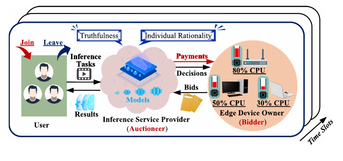
图 1. 基于拍卖的边缘 AI 推理架构。边缘 AI 推理服务（拍卖人）接收用户的推理任务，将其分发到中标设备上的模型处理，再向用户返回结果；设备所有者作为竞标方提交报价，机制需兼顾真实性与个体理性。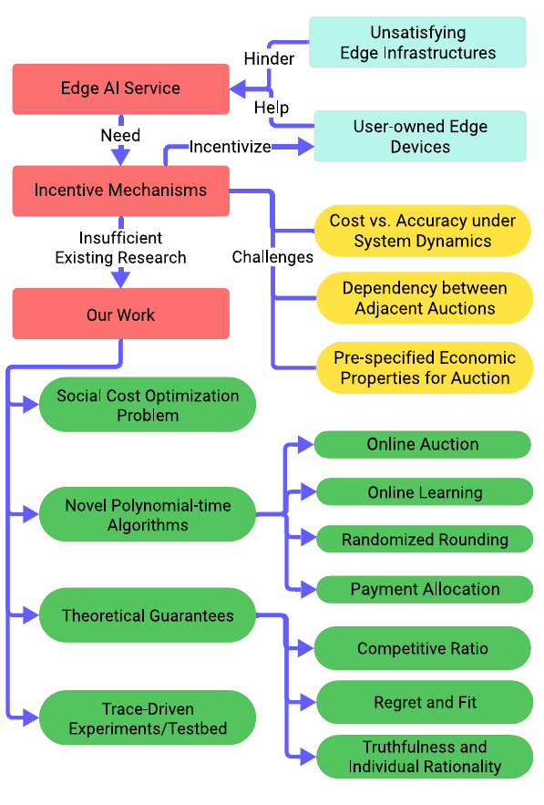
图 2. 引言结构示意图。论文依次提出边缘资源激励、社会成本优化、在线拍卖、在线学习、随机舍入、支付分配及其理论保证。题名、摘要与第一节：引言
论文信息
Edge AI Inference as a Service via Dynamic Resources From Repeated Auctions
通过重复拍卖动态获取资源的边缘 AI 推理服务
Mingtao Ji、Hehan Zhao、Lei Jiao、Sheng Zhang、Xin Li、Zhuzhong Qian、Baoliu Ye
发表于 IEEE Transactions on Mobile Computing, vol. 24, no. 9, September 2025，页码 7947–7964。DOI：10.1109/TMC.2025.3554816。论文于 2024 年 7 月 6 日收稿，2025 年 1 月 13 日修回，2025 年 3 月 11 日录用；在线发表日期为 2025 年 3 月 26 日，当前版本日期为 2025 年 8 月 6 日。
To enable edge AI providers to recruit edge devices and use them to deploy AI models and provision inference services, we conduct a comprehensive mathematical and algorithmic study on a novel incentive and optimization mechanism based on repeated auctions. We first model and formulate a time-cumulative social cost optimization problem to capture the challenges of the trade-off between cost and accuracy, the dependency between adjacent auctions, and the need of achieving desired economic properties. Then, to solve this intractable non-linear integer program in an online manner, we design a set of polynomial-time algorithms that work together. Our approach dynamically chooses and switches winning bids under careful control, incorporates online learning to overcome posterior inference accuracy and workload queue dynamics, and leverages randomization to strategically convert fractional decisions of model placement and query dispatch into integers. We also allocate payments to meet the necessary and sufficient conditions for the desired economic properties. Further, we rigorously prove the constant competitive ratio, the sub-linear regret and fit, and the truthfulness and individual rationality for our proposed approach. Finally, through extensive experiments using real devices, AI models, and data traces, we have validated the substantial advantages of our proposed approach compared to the baselines and the state-of-the-art methods.
为使边缘 AI 服务提供方能够招募边缘设备，并在这些设备上部署 AI 模型、提供推理服务，本文对一种基于重复拍卖（repeated auctions）的新型激励与优化机制开展了系统的数学和算法研究。首先，我们建模并形式化一个全时域累计社会成本（social cost）优化问题，以刻画成本与精度之间的权衡、相邻拍卖之间的依赖关系，以及实现所需经济性质的要求。随后，为在线求解这个难以处理的非线性整数规划问题，我们设计了一组协同工作的多项式时间算法。该方法在审慎控制下动态选择和切换中标设备，利用在线学习处理事后才能观测的推理精度和工作负载队列动态，并借助随机化把模型部署和查询分发的分数决策转为整数决策。我们还设计支付分配，使其满足目标经济性质的充要条件。进一步地，我们严格证明了所提方法具有常数竞争比（competitive ratio）、次线性后悔值（regret）和约束拟合度（fit），并在期望意义下满足真实性（truthfulness）与个体理性（individual rationality）。最后，通过使用真实设备、AI 模型和数据轨迹开展的大量实验，我们验证了该方法相较基线和先进方法具有显著优势。
Index Terms—Edge AI, inference, edge computing, online optimization, online learning, auction.
关键词：边缘 AI；推理；边缘计算；在线优化；在线学习；拍卖。
I. 引言
EDGE AI inference [1] entails deploying machine learning models upon devices at the network edge closer to the end users, substantially reducing response time and bandwidth consumption and safeguarding data privacy [2]. As a service, edge AI inference is adopted in a range of applications, such as virtual reality [3], healthcare [4], and autonomous vehicles [5]. For example, in virtual reality, the inference service receives the end users’ inference requests such as gestures and voices and provides inference results promptly.
边缘 AI 推理（edge AI inference）[1] 是指在更靠近终端用户的网络边缘设备上部署机器学习模型。这样做能够显著缩短响应时间、降低带宽消耗，并保护数据隐私 [2]。作为一种服务，边缘 AI 推理已用于虚拟现实 [3]、医疗健康 [4] 和自动驾驶汽车 [5] 等多种场景。例如，在虚拟现实中，推理服务接收用户的手势、语音等推理请求，并迅速返回推理结果。
Unfortunately, many edge AI services do not actually have sufficient and satisfying edge devices for deploying edge AI inference. Although today’s cloud computing vendors also provide “pay-as-you-go” edge computing services [6], they could still be costly, especially for small-scale edge AI businesses. For instance, Amazon CloudFront has the computation price 6 times higher than its EC2 [7]. Besides, such existing edge infrastructures, distributed though, often reside at pre-specified fixed locations, and may still be unable to sufficiently reach the target group of end users in particular geographic locations at a finer granularity. More importantly, current commercial edge provisioning focuses on edge servers only; yet, an edge device does not actually have to be an edge server, and it can be a smart router [8], a home NAS [9], and a personal computer, e.g., the “AI PC” [10]. Ideally, it could be better if any of such edge devices at any location could be potentially and appropriately employed and released as needed by the edge AI service.
遗憾的是，许多边缘 AI 服务并没有足够且合适的边缘设备来部署推理服务。尽管如今的云计算厂商也提供“按使用量付费”的边缘计算服务 [6]，但成本仍可能很高，尤其对小型边缘 AI 企业而言。例如，Amazon CloudFront 的计算价格是其 EC2 的 6 倍 [7]。此外，现有边缘基础设施虽然分布广泛，却通常位于预先指定的固定地点，仍可能无法以足够细的粒度覆盖特定地理区域中的目标用户群。更重要的是，当前商业边缘资源供给主要面向边缘服务器；但边缘设备并不一定非得是服务器，也可以是智能路由器 [8]、家用网络存储设备（NAS）[9]，或个人电脑，例如“AI PC”[10]。理想情况下，边缘 AI 服务可以根据需要，在任意地点适时启用并释放这类设备。
Moving toward this direction, what is needed here is an incentive mechanism to incentivize the edge device owners to contribute their edge devices or idle resources on such edge devices to the edge AI service. Auction can serve as such an incentive mechanism, as shown in Fig. 1. The edge AI inference service can act as the auctioneer and conduct auctions to procure edge resources as bids from the edge devices that can act as the bidders. Auction has many advantages indeed, including reducing the chance of mis-pricing, matching the demand with the supply better, and capturing the market dynamics in real time [11], [12].
要实现这一目标，需要有一种激励机制，促使边缘设备所有者向边缘 AI 服务提供设备或设备上的闲置资源。拍卖可以承担这种激励作用，如图 1 所示。边缘 AI 推理服务可以作为拍卖人，通过拍卖从边缘设备处购买资源；设备则作为竞标方提交报价。拍卖具有多项优势，包括降低定价失准的可能性、更好地匹配供需，以及实时反映市场动态 [11], [12]。
However, it is non-trivial to design auction-based mechanisms to continuously operate and orchestrate the edge AI inference service with desired service quality at minimum cost upon dynamically-recruited edge resources, while keeping the edge devices incentivized to contribute such resources. We identify three unique and fundamental challenges as follows, also highlighted in Fig. 2.
然而，如何基于动态招募的边缘资源，持续运行和编排边缘 AI 推理服务，在最低成本下达到所需服务质量，同时持续激励设备提供资源，并非易事。本文归纳出三个独特且根本性的挑战，图 2 也对其作了概括。
成本与精度的动态权衡
Cost versus Accuracy under System Dynamics: Given the often limited edge capacity, we need to carefully choose between high-accuracy models which can consume excessive edge resources and low-accuracy models which can save resources but have less satisfying service quality. What complicates this is that the inference accuracy is posterior—we only observe the accuracy (or the error rate) of a model upon users’ inference queries after we actually deploy and use this model to serve those queries. When making model deployment decisions, as the actual queries have not been served yet, we have no knowledge about the model’s performance on those queries. The difficulty further escalates because meanwhile we need to (i) dispatch users’ queries to different edge devices under time-varying network conditions at minimum communication cost, and (ii) maintain and eventually clear the query queue on each edge device given models’ diverse execution speeds on different devices.
系统动态下的成本与精度权衡：边缘设备的计算能力通常有限，因此必须谨慎选择模型：精度较高的模型可能占用过多边缘资源；资源需求较低的模型则可能降低服务质量。问题更复杂之处在于，推理精度是事后才能观测的——只有在实际部署模型并用它处理用户查询之后，我们才能观察到该模型的精度（或误差率）。在作出模型部署决策时，实际查询尚未处理，模型对这些查询的表现还未知。与此同时，我们还必须在变化的网络条件下，以最低通信成本把用户查询分发给不同边缘设备；并且考虑到模型在不同设备上的执行速度不同，还要维护每台设备的查询队列并最终将其清空。
相邻拍卖之间的依赖
Dependency between Adjacent Auctions: The auctions are not a one-time transaction, but are often repetitive as we continuously recruit edge resources; yet, each auction cannot just work independently. An edge device that was a winning bid in the last auction but does not win in the current auction may revoke its resources, shut down, or leave the system; if it joins again in the next auction and is selected to win, then it can incur “switching cost”, because the inference service needs to re-authorize the device, re-initialize its execution environment, and re-deploy the model(s), causing leading time and effort. To mitigate such switching cost, ideally, we should choose a winning bid in one auction by cautiously expecting whether this bid could also win in the next auction; yet, this is pretty hard if ever possible, because the next auction has not occurred yet and the inputs then could all change as it happens [1], [13].
相邻拍卖之间的依赖：随着边缘资源被持续招募，拍卖会反复举行，并非一次性交易；因此，每次拍卖不能孤立处理。某设备上一轮中标、本轮却落选后，可能收回资源、关机或退出系统。如果它在下一轮重新加入并再次中标，就可能产生“切换成本”：推理服务需要重新授权设备、重新初始化执行环境并重新部署模型，这会耗费时间和精力。理想情况下，为降低这类成本，某一轮选择中标设备时就应审慎考虑它下一轮是否也可能中标。但这几乎难以做到，因为下一轮拍卖尚未发生，其输入届时也可能全部改变 [1], [13]。
每轮拍卖的经济性质
Economic Properties of Each Auction: Even for a single auction in our scenario, it is still non-trivial to design and solve. Choosing winning bids requires to not only balance cost and accuracy but also attain the desired economic properties such as truthfulness and individual rationality [11], [14]. Truthfulness ensures that every bid maximizes its utility by bidding the price that reflects the bidder’s true valuation (i.e., no motivation to lie about the bidding price), and individual rationality ensures that every bid always has non-negative utility regardless of the auction outcome (i.e., voluntary auction participation). The well-known Vickrey-Clarke-Groves (VCG) mechanisms [15] can achieve such economic properties. However, original VCG requires to exactly solve the underlying optimization problem, but our problem, due to the complexities and integer decisions, is intractable as will be shown; fractional VCG [16] is also inapplicable, due to the existence of the extra terms of the edge AI inference overhead and accuracy in each auction.
每轮拍卖的经济性质：即使只考虑单轮拍卖，机制的设计与求解也并不简单。选择中标方不仅要平衡成本和精度，还必须实现真实性和个体理性等期望的经济性质 [11], [14]。真实性要求竞标方如实报告自身估值时效用最大化，也就是没有虚报价格的动机；个体理性要求无论拍卖结果如何，每个竞标方的效用都不为负，即参与拍卖是自愿且不会导致损失。著名的 Vickrey–Clarke–Groves（VCG）机制 [15] 能实现这些性质，但原始 VCG 要求精确求解底层优化问题。由于本问题复杂且含整数决策，后文将说明它难以求解；分数 VCG [16] 也不适用，因为每轮拍卖还包含边缘 AI 推理开销和精度等额外项。
Existing studies fall short to effectively tackle the aforementioned challenges. Many works [1], [13], [17], [18], [19] on edge AI inference systems often assume abundant resources without dynamically adding or removing resources through economic means, unable to meet the needs of our scenario. Other works [11], [12], [20], [21], [22], [23] on incentive mechanisms at the network edge typically do not consider AI inference, or ignore the unique features and challenges of edge AI inference as we highlight above, thus inapplicable to our scenario. See Section VI for detailed discussions.
现有研究尚不能有效解决上述挑战。许多关于边缘 AI 推理系统的工作 [1], [13], [17]–[19] 假设资源充足，却不通过经济机制动态增减资源，因而无法满足本文场景的需要。另一些关于网络边缘激励机制的工作 [11], [12], [20]–[23] 通常没有考虑 AI 推理，或忽略了边缘 AI 推理特有的性质和挑战，因此也不能直接用于本文场景。详细讨论见第 VI 节。
本文贡献
In this paper, we overcome all the aforementioned challenges via a mathematical and algorithmic study with solid theoretical analysis. We make multiple contributions:
本文通过数学建模和算法研究，并辅以严谨的理论分析，着手解决上述挑战。主要贡献如下。
First, we model and formulate a time-cumulative social cost optimization problem, which minimizes the sum of the edge AI service’s cost, the edge devices’ cost, and the inference error rate, subject to resource capacity and inference query queue dynamics. The control decisions include winning-bid selection, model placement, query dispatch, and payments to bids in each auction at each corresponding time slot. This problem is a non-linear integer program, unsurprisingly NP-hard, but is general enough with almost zero assumption on the input dynamics and heterogeneities.
第一，本文建立并形式化一个全时域累计社会成本优化问题。在资源容量和推理查询队列动态的约束下，问题最小化边缘 AI 服务成本、边缘设备成本与推理误差率之和。每个时隙、每轮拍卖的控制决策包括选择中标方、部署模型、分发查询以及向竞标方支付费用。该问题属于非线性整数规划，因而是 NP 难问题；但它具有较强的一般性，几乎不对输入动态性和异质性作假设。
Second, to enable the edge AI service to solve this problem to provision the inference service while procuring the resources, we propose four novel polynomial-time online algorithms that can work jointly. We decouple our original problem into two sub-problems based on the bid-switching cost. We design our overall online optimization algorithm to dynamically balance the switching cost and all the rest of the cost terms by only triggering a new switch operation when the accumulated other costs exceed a pre-specified parameter times the switching cost of the last switch operation. To that end, we invoke our second algorithm, which is based on online learning, to address the posterior inference accuracy and the query queue state transitions for each auction. During this process, we also invoke our third algorithm which adopts randomization to convert all our fractional control decisions into integers without violating any constraints at each time slot. Via our fractional and integral bid-selection decisions, our fourth algorithm calculates payments in each auction using the real bidding prices and the conceived alternative bidding prices of the winning bids.
第二，为使边缘 AI 服务能在采购资源的同时提供推理服务，本文提出四种可协同工作的新型多项式时间在线算法。我们依据竞标切换成本，将原问题拆分为两个子问题。整体在线优化算法动态平衡切换成本与其他成本项：只有当累计的其他成本超过预设参数与上一次切换成本的乘积时，才触发新一轮切换。为此，第二个基于在线学习的算法负责处理各轮拍卖中的事后推理精度和查询队列状态转移；第三个算法通过随机化，把分数控制决策转换成整数决策，同时不违反每时隙的即时约束。第四个算法则利用分数和整数的中标决策，根据实际报价以及为中标方构造的替代报价，计算每轮拍卖的支付。
Third, we rigorously prove the multiple worst-case performance guarantees associated with our algorithms. Overall, our combined algorithmic approach achieves a constant competitive ratio, i.e., the social cost incurred by our online approach (which observes the inputs gradually) is upper-bounded by this constant times the social cost in the offline optimal situation (which observes all inputs in hindsight at once). For our online learning component that addresses all the non-switching costs, we achieve sub-linear regret and fit, i.e., as time goes, the time-averaged difference between those costs incurred by our approach and those incurred in the series of one-shot optimums vanishes, and the time-averaged violation of the long-term constraints also vanishes. Our payment allocation component meets the sufficient and necessary conditions for truthfulness and individual rationality in randomized auctions, and thus achieves these economic properties simultaneously.
第三，本文严格证明了算法的多项最坏情形性能保证。总体而言，组合算法具有常数竞争比：逐步观测输入的在线方法所产生的社会成本，不超过一次性预知全部输入的离线最优社会成本的某个常数倍。对于负责所有非切换成本的在线学习部分，本文证明其遗憾和 fit 均为次线性；也就是说，随着时间推移，方法成本与逐时隙单独求得的最优成本之间的时间平均差距趋于零，长期约束违反量的时间平均值也趋于零。支付分配组件满足随机拍卖真实性和个体理性的充要条件，因此能够同时实现这两种经济性质。
Fourth, we build a testbed with real hardware, adopt real AI models, and compare our approach to a variety of other methods driven by real traces (e.g., edge device locations, workload variations) for various performance metrics. We briefly summarize our observations: (i) Our approach saves social cost in real time, reducing social cost by 55%∼70% cumulatively compared to baselines and by 30%∼49% cumulatively compared to state-of-the-arts; (ii) Our approach scales well with inputs and consistently outperforms others; (iii) Our online learning component has the lowest regret, achieving sub-linear growth in both regret and fit; (iv) Our approach achieves truthfulness and individual rationality in practice; (v) Our algorithms run fast and finish in tens of milliseconds, except the payment allocation which could consume seconds, acceptable per 15-minute-long time slot.
第四，本文搭建真实硬件测试床，采用真实 AI 模型，并使用真实轨迹数据（例如边缘设备位置、工作负载变化）驱动多种对比方法，从多个指标评估所提方法。主要观察结果如下：(i) 所提方法能实时节省社会成本；累计成本相较基线方法降低 55%–70%，相较当前先进方法降低 30%–49%；(ii) 方法具有良好的可扩展性，并持续优于其他方法；(iii) 在线学习组件的遗憾最低，遗憾和 fit 均呈次线性增长；(iv) 实验中所提方法实现了真实性和个体理性；(v) 除支付分配可能需要数秒外，算法通常在几十毫秒内完成；对每个 15 分钟时隙而言，这样的耗时可以接受。
The rest of this paper is structured as follows. Section II models and formulates the social cost optimization problem. Section III proposes and designs our algorithms to solve this problem online. Section IV analyzes and proves the theoretical performance guarantees of our algorithms. Section V validates the practical performance of our algorithms via testbed-based experiments. Section VI summarizes the existing research. Section VII discusses some related issues in this work. Section VIII concludes.
本文其余部分安排如下：第 II 节对社会成本优化问题进行建模和形式化；第 III 节提出并设计在线求解算法；第 IV 节分析并证明算法的理论性能保证；第 V 节通过测试床实验验证算法的实际表现；第 VI 节综述现有研究；第 VII 节讨论本文相关问题；第 VIII 节总结全文。
图 1–2
Fig. 1. Architecture of auction-based edge AI inference.
图 1. 基于拍卖的边缘 AI 推理架构。边缘 AI 推理服务（拍卖人）接收用户的推理任务，将其分发到中标设备上的模型处理，再向用户返回结果；设备所有者作为竞标方提交报价，机制需兼顾真实性与个体理性。
Fig. 2. Structure of the introduction section.
图 2. 引言结构示意图。论文依次提出边缘资源激励、社会成本优化、在线拍卖、在线学习、随机舍入、支付分配及其理论保证。
II. 建模与问题形式化
II. 建模与问题形式化
A. 场景可行性
如今，用户自有的边缘硬件已经能够部署边缘 AI 推理，并通常拥有可供其使用的闲置算力。这些设备只需要适当激励即可参与边缘 AI 推理服务，这正是本文研究的动机。
边缘侧存在大量闲置资源：近年来，智能路由器和家用 NAS [9] 等现实边缘设备的数量持续增长。根据《全球物联网市场预测》报告 [24]，到 2030 年，物联网设备预计将达到 400 亿台。然而，其中相当一部分设备会长期处于闲置状态 [25]；统计数据显示，闲置设备消耗的能源占总能耗的 32%。利用这些未充分使用的设备有助于减少资源浪费、提高效率。
具备 AI 能力的边缘硬件技术：边缘硬件的快速发展使边缘 AI 推理部署成为可能。第一，越来越多边缘设备配备了 AI 加速器（例如 NVIDIA NX 系列 [26]），能够高效运行推理。第二，边缘设备（例如家用 NAS [9] 和网络摄像头 [27]）的存储容量显著增加，许多设备已支持 TB 级存储。第三，5G 和 Wi-Fi 6 [28] 的广泛应用显著降低了边缘设备与中心服务器之间的通信时延，并增加了可用带宽，使边缘推理更加有效。
边缘 AI 推理的应用：随着深度学习模型发展，推理服务已成为许多实时应用的关键支撑，例如虚拟现实 [3]、医疗健康 [4] 和自动驾驶汽车 [5]。这些应用需要及时处理大量数据，以提供高精度、低时延的智能服务；在边缘部署 AI 模型通常被认为是有效方案。
B. 系统设置与模型
本文的符号汇总于表 I。
表 I 记号表
| 类别 | 符号 | 含义 |
|---|---|---|
| 输入 | $\mathcal{N}$ | 边缘设备集合。 |
| 输入 | $\mathcal{M}$ | AI 模型集合。 |
| 输入 | $\mathcal{T}$ | 时隙集合。 |
| 输入 | $B_{n,t}$ | 设备 $n$ 在时隙 $t$ 提交的报价组合。 |
| 输入 | $b_{n,t}$ | 时隙 $t$ 设备 $n$ 提交的报价金额。 |
| 输入 | $c_n$ | 设备 $n$ 的计算资源容量。 |
| 输入 | $l_n$ | 设备 $n$ 的切换成本。 |
| 输入 | $r_m$ | 模型 $m$ 所需的计算资源。 |
| 输入 | $q_n$ | 设备 $n$ 的查询队列容量。 |
| 输入 | $p_{n,m}$ | 设备 $n$ 上模型 $m$ 每时隙可处理的查询数。 |
| 输入 | $e_{n,m,t}$ | 时隙 $t$ 向设备 $n$ 发送模型 $m$ 的通信成本。 |
| 输入 | $d_{n,t}$ | 时隙 $t$ 向设备 $n$ 发送一条查询的通信成本。 |
| 输入 | $\delta_{n,m,t}$ | 时隙 $t$ 是否需要向设备 $n$ 发送模型 $m$ 的指示变量。 |
| 输入 | $a_{n,m,t}$ | 时隙 $t$ 模型 $m$ 在设备 $n$ 上的推理误差率。 |
| 输入 | $\tau_t$ | 时隙 $t$ 终端用户提交的查询总数。 |
| 决策 | $x_{n,t}$ | 设备 $n$ 是否在时隙 $t$ 的拍卖中中标。 |
| 决策 | $y_{n,m,t}$ | 模型 $m$ 是否在时隙 $t$ 部署于设备 $n$。 |
| 决策 | $z_{n,m,t}$ | 时隙 $t$ 分配给设备 $n$ 上模型 $m$ 的查询数。 |
| 决策 | $w_{n,t}$ | 时隙 $t$ 支付给设备 $n$ 的金额。 |
系统与拍卖流程
本文考虑的边缘 AI 推理系统主要包含三类实体。第一，服务提供方运营和管理推理服务，并希望利用边缘设备部署 AI 模型，在设备上运行推理服务来处理终端用户的查询。用集合 $\mathcal{M}=\{1,2,\ldots,M\}$ 表示该服务的 AI 模型。第二，各边缘设备由相应设备所有者持有，并拥有可供边缘 AI 服务使用的资源。这些设备通常分布在靠近终端用户的不同地点，包括边缘服务器、桌面电脑和移动设备等。用集合 $\mathcal{N}=\{1,2,\ldots,N\}$ 表示所有边缘设备。第三，终端用户向边缘 AI 推理服务提交查询，由边缘设备处理，再接收推理结果。整个系统按连续时隙运行，时隙集合记为 $\mathcal{T}=\{1,2,\ldots,T\}$。
每个时隙，边缘 AI 推理服务作为拍卖人，与作为竞标方的边缘设备举行一轮拍卖。不失一般性，假设每台设备在每轮拍卖中提交一个报价。如果某设备没有提交报价，则等价地把它视为提交了一个报价为正无穷的“虚拟报价”，因此该虚拟报价永远不会中标。
时隙 $t\in\mathcal{T}$ 的拍卖包含多个步骤，如图 3 所示。首先，推理服务征集报价，每台设备 $n\in\mathcal{N}$ 提交一个格式为 $B_{n,t}=\{b_{n,t},c_n,\beta_n\}$ 的报价。其中，$b_{n,t}$ 是报价金额，即设备 $n$ 希望在时隙 $t$ 因向推理服务提供资源而收取的费用；$c_n$ 表示可用资源容量，例如设备上可用的处理器（或处理器核心）数量；$\beta_n$ 表示设备上每个处理器（或核心）的处理速度。不同设备的处理器类型和速度可以不同，但本文假设单台设备内部的处理器（或核心）同质；作者指出，方法可较容易扩展到设备内部异质的情形。其次，推理服务收到所有报价后，决定哪些报价中标，并计算每个中标方的支付金额。中标方收到的支付不一定等于其报价；本文的目标之一正是设计决定中标方和支付金额的算法。第三，依据拍卖结果，服务方向相应设备发送选定的 AI 模型，把用户查询分发给这些设备，使用模型处理查询，并将结果返回用户。第四，服务方向设备付款。根据拍卖人与竞标方达成的协议，第三步可以在第四步之前或之后进行。
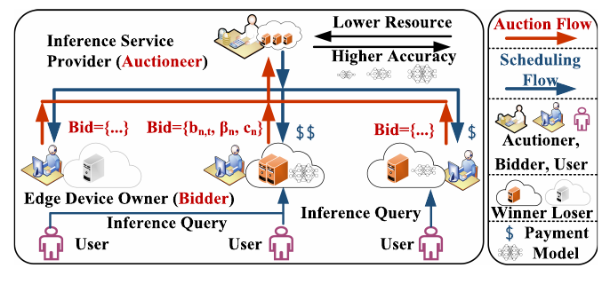
图 3. 边缘 AI 推理系统中的拍卖流程。控制决策与成本
推理服务在每个时隙需要作出多项控制决策：$x_{n,t}\in\{0,1\}$ 表示设备（或其报价）$n$ 是否在时隙 $t$ 的拍卖中中标；$y_{n,m,t}\in\{0,1\}$ 表示服务方是否在时隙 $t$ 选择模型 $m$ 并将其部署到设备 $n$；$z_{n,m,t}\in\mathbb{Z}_{+}$ 表示时隙 $t$ 分配给设备 $n$ 上模型 $m$ 处理的推理查询数量；$w_{n,t}\ge0$ 表示服务方在时隙 $t$ 向设备 $n$ 支付的金额。
在时隙 $t$，推理服务的成本由多部分构成。第一，服务方向中标方支付费用，总额为 $\sum_n x_{n,t}w_{n,t}$。第二，服务方向边缘设备发送模型会产生通信成本，记为 $\sum_n\sum_m e_{n,m,t}y_{n,m,t}\delta_{n,m,t}$。其中，$e_{n,m,t}$ 可以表示时隙 $t$ 向设备 $n$ 发送模型 $m$ 所需的传输时间或流量；$\delta_{n,m,t}$ 是二元指示变量，表示该时隙是否确实需要向设备发送模型 $m$：需要发送时为 1，否则为 0。如果模型已因先前拍卖而留在设备上，就可能不必重发；若服务方更新了模型，或设备此前落选后删除了模型，则可能需要重新发送。第三，把推理查询分发到各设备上的模型进行处理也会产生通信成本，记为 $\sum_n\sum_m d_{n,t}z_{n,m,t}$。$d_{n,t}$ 可以表示时隙 $t$ 向设备 $n$ 发送一条查询的传输时间或流量。因此，推理服务的全时域总成本为：
每个时隙，边缘设备 $n$ 承担的成本也包含多项。第一是报价成本 $x_{n,t}b_{n,t}$，可由时隙 $t$ 的设备运营成本决定，例如电费以及按时隙摊销的硬件费用。第二是设备从推理服务收到的支付；在设备成本中将其视为负成本，即 $-x_{n,t}w_{n,t}$。第三是“切换成本”：若设备在上一轮 $t-1$ 未中标、在当前时隙 $t$ 中标，服务方可能需要重新连接并授权设备；设备也可能需要重新初始化执行环境、重新准备资源，甚至重新启动。这些操作会耗费时间，论文将其视作切换成本。其表达式为 $\sum_n l_n[x_{n,t}-x_{n,t-1}]^+$，其中 $[u]^+=\max\{u,0\}$，$l_n$ 是设备 $n$ 的启动或接入耗时。因此，全时域边缘设备成本为：
用 $\Upsilon_{n,m,t}$ 表示时隙 $t$ 模型 $m$ 在设备 $n$ 上的准确率，则相应的误差率定义为 $a_{n,m,t}=1-\Upsilon_{n,m,t}$。误差率越低，推理服务质量越好。误差率取决于所选模型以及该模型处理的具体查询 [29]。同一模型的不同版本也可能具有不同误差率，可将其视作不同模型。全时域内所有设备上模型推理的总误差率为 $\sum_t\sum_n\sum_m a_{n,m,t}y_{n,m,t}$。需要注意，$a_{n,m,t}$ 是事后可观测量：无论其取值如何，服务方都只有在设备 $n$ 上部署模型 $m$ 并用它处理时隙 $t$ 的查询之后才能观测到该误差率。终端用户查询随时间变化，因此同一模型的误差率也可能随时变化。
C. 问题形式化
优化约束
第一，每台边缘设备 $n$ 上部署的 AI 模型必须满足该设备的资源容量限制：
这里，$r_m$ 是模型 $m$ 执行推理所需的资源量，例如处理器（或处理器核心）数量；$c_n$ 是前文定义的设备 $n$ 的可用资源容量。
第二，每台边缘设备 $n$ 都维护一个由推理查询构成的队列，模型必须正确反映其队列动态：
其中，$Q_{t,n}$ 是时隙 $t$ 设备 $n$ 上等待处理的查询队列长度；$z_{n,m,t}$ 是该时隙到达设备 $n$、等待由模型 $m$ 处理的查询数；$p_{n,m}$ 是模型 $m$ 在设备 $n$ 上每时隙处理的查询数，它可能取决于设备速度 $\beta_n$、资源需求 $r_m$ 和模型本身；$q_n$ 是设备队列容量。论文还要求最终清空所有设备的队列，即 $Q_{T+1,n}=0$。正部算子 $[u]^+=\max\{u,0\}$ 用来表达从 $Q_{t,n}$ 到 $Q_{t+1,n}$ 的队列转移。
论文针对的是使用模型快速、高效处理“小型”轻量查询的边缘 AI 服务。队列容量约束会推动排队查询得到处理。本文不考虑需要跨多个时隙运行的长推理任务，也不建模明确的任务截止期限。
第三，时隙 $t$ 用户提交给推理服务的所有查询（总数记为 $\tau_t$）都必须分发给边缘设备上的 AI 模型：
原始社会成本问题与长期约束松弛
我们的目标是在约束 (1)–(3) 下最小化全时域社会成本，即最小化推理服务总成本、边缘设备总成本和推理总误差率之和。然而，要在线直接求解该问题极具挑战，甚至可能难以实现。第一，有些输入无法及时观测，只有作出决策后才会显现，例如误差率 $a_{n,m,t}$，以及传输时间 $e_{n,m,t}$、$d_{n,t}$。在看不到这些输入的情况下作出控制决策，本身就很困难。第二，基于非线性正部算子 $[\cdot]^+$ 的状态转移约束把相邻时隙耦合起来。如何在线落实队列动态，同时确保最终清空队列，并不简单。
因此，作者将问题重新表述如下，并把重述后的问题称为原问题 $P$。在重述过程中，部分放宽了“即时”约束 (2)–(3)，将它们改写为“长期”约束 $C_2$–$C_4$。也就是说，不再要求每个时隙都逐项满足相应的即时约束，而是在整个时域的累计意义下满足这些约束。
重述后的优化问题 $P$ 为：
译者解释：$C_1$ 仍然逐时隙限制设备算力；$C_2$ 是由队列递推、队列容量和最终清空条件推出的加权长期约束；$C_3$ 与 $C_4$ 分别约束“累计分发量不超过累计到达量”和“累计到达量不超过累计分发量”，二者合在一起表示全时域分发总量等于查询总量。这里的松弛不是说查询可以永久丢弃，而是把精确的逐时隙队列动态改成在线学习可处理的长期约束，后文再以 fit 衡量其累计违反量。
上述优化目标是最小化社会成本。与常见的社会成本优化做法一致，支付作为转移项在总社会成本中相互抵消；但支付仍须作为每个时隙拍卖结果的一部分进行计算。许多既有拍卖研究也采用这种抵消处理。不过，这并不意味着 $w_{n,t}$ 与其他决策变量无关。
图 4. 所提方法的工作流。OAA 调用 OLA 求解两个子问题；在满足受控切换条件时，使用 RRA 将分数决策舍入为整数决策；随后应用中标、部署和查询分配决策，并调用 OPA 计算支付。
在线求解的算法挑战
即使经过上述松弛，在线求解问题 $P$ 仍然困难。第一，目标函数中仍有耦合相邻时隙的切换成本，因此当前中标决策会影响当前与下一时隙之间的切换成本，而下一时隙的中标决策此刻尚未知晓。第二，长期约束虽然通常比即时约束更易处理，但在未来条件不确定且部分输入需事后观测的情况下，仍需在线谨慎执行。第三，整数决策变量使问题成为整数规划；即使在离线情形下，这类问题通常也是 NP 难的 [30]。第四，为满足后文所述的真实性和个体理性等经济性质，还必须为每轮拍卖的中标方确定支付金额，而支付通常取决于报价和拍卖结果。
本节理解
核心建模把一个“谁来提供资源、在哪部署什么模型、查询派给谁、付多少钱”的联合决策写成社会成本优化问题。最关键的取舍有两点：支付虽不计入社会总成本，却必须在拍卖中准确计算；队列和查询数量约束从逐时隙精确要求改成累计长期要求，以便使用在线算法，但相应保证要结合 fit 而理解。
II. 建模与问题形式化
A. 场景可行性
Today’s user-owned edge hardware already supports the deployment of edge AI inference and also has the idle capacity for it. These edge devices just need to be incentivized to participate in edge AI inference, which motivates our study.
如今，用户自有的边缘硬件已经能够部署边缘 AI 推理，并通常拥有可供其使用的闲置算力。这些设备只需要适当激励即可参与边缘 AI 推理服务，这正是本文研究的动机。
Abundant Idle Resources at Edge: The number of the edge devices in reality, such as smart routers and home NAS systems [9], has been growing steadily in recent years. According to the Global IoT Market Forecast report [24], the number of IoT devices is expected to reach 40 billion by 2030. Yet, a significant portion of such devices remain idle [25] for long periods. Statistics indicates that idle devices account for 32% of total energy consumption. Leveraging these underutilized devices can help reduce resource waste and maximize efficiency.
边缘侧存在大量闲置资源：近年来，智能路由器和家用 NAS [9] 等现实边缘设备的数量持续增长。根据《全球物联网市场预测》报告 [24]，到 2030 年，物联网设备预计将达到 400 亿台。然而，其中相当一部分设备会长期处于闲置状态 [25]；统计数据显示，闲置设备消耗的能源占总能耗的 32%。利用这些未充分使用的设备有助于减少资源浪费、提高效率。
AI-Aware Edge Hardware Technology: The rapid advancement in edge hardware supports the deployment of edge AI inference. First, an increasing number of edge devices are now equipped with AI accelerators (e.g., NVIDIA NX Series [26]), enabling efficient inference. Second, the storage capacity of edge devices (e.g., home NAS [9] and Webcam [27]) has expanded significantly, with many now supporting TB-level storage. Third, the widespread adoption of 5G and Wi-Fi 6 [28] has significantly reduced the communication latency and increased the available bandwidth between edge devices and central servers, making edge inference more effective.
具备 AI 能力的边缘硬件技术：边缘硬件的快速发展使边缘 AI 推理部署成为可能。第一，越来越多边缘设备配备了 AI 加速器（例如 NVIDIA NX 系列 [26]），能够高效运行推理。第二，边缘设备（例如家用 NAS [9] 和网络摄像头 [27]）的存储容量显著增加，许多设备已支持 TB 级存储。第三，5G 和 Wi-Fi 6 [28] 的广泛应用显著降低了边缘设备与中心服务器之间的通信时延，并增加了可用带宽，使边缘推理更加有效。
Applications of Edge AI Inference: As deep learning models evolve, inference services have become critical for supporting many real-time applications (e.g., virtual reality [3], healthcare [4], and autonomous vehicles [5]). These applications require the timely processing of large volumes of data to deliver high-precision and low-latency intelligent services, where deploying AI models at edge has been widely believed to be a valid solution.
边缘 AI 推理的应用：随着深度学习模型发展，推理服务已成为许多实时应用的关键支撑，例如虚拟现实 [3]、医疗健康 [4] 和自动驾驶汽车 [5]。这些应用需要及时处理大量数据，以提供高精度、低时延的智能服务；在边缘部署 AI 模型通常被认为是有效方案。
B. 系统设置与模型
Our notations are summarized in Table I.
本文的符号汇总于表 I。
表 I 记号表
TABLE I NOTATIONS. Input: N Set of edge devices; M Set of AI models; T Set of time slots; B_{n,t} Bid submitted by edge device n at time slot t; b_{n,t} Bidding price of bid n at t; l_n Switching cost for edge device n; c_n Computing resource capacity of edge device n; r_m Computing resource demand of model m; q_n Query queue capacity of edge device n; p_{n,m} Number of queries processed by model m on edge device n per time slot; e_{n,m,t} Communication cost for sending model m to edge device n at time slot t; d_{n,t} Communication cost for sending one query to edge device n at time slot t; δ_{n,m,t} Whether to send model m to edge device n at time slot t; a_{n,m,t} Error rate of model m on edge device n at time slot t; τ_t Number of queries submitted by end users at time slot t. Decision: x_{n,t} Whether edge device n wins in the auction at t; y_{n,m,t} Whether model m is deployed on edge device n at t; z_{n,m,t} Number of queries sent to model m on edge device n at t; w_{n,t} Payment made to edge device n at t.
| 类别 | 符号 | 含义 |
|---|---|---|
| 输入 | $\mathcal{N}$ | 边缘设备集合。 |
| 输入 | $\mathcal{M}$ | AI 模型集合。 |
| 输入 | $\mathcal{T}$ | 时隙集合。 |
| 输入 | $B_{n,t}$ | 设备 $n$ 在时隙 $t$ 提交的报价组合。 |
| 输入 | $b_{n,t}$ | 时隙 $t$ 设备 $n$ 提交的报价金额。 |
| 输入 | $c_n$ | 设备 $n$ 的计算资源容量。 |
| 输入 | $l_n$ | 设备 $n$ 的切换成本。 |
| 输入 | $r_m$ | 模型 $m$ 所需的计算资源。 |
| 输入 | $q_n$ | 设备 $n$ 的查询队列容量。 |
| 输入 | $p_{n,m}$ | 设备 $n$ 上模型 $m$ 每时隙可处理的查询数。 |
| 输入 | $e_{n,m,t}$ | 时隙 $t$ 向设备 $n$ 发送模型 $m$ 的通信成本。 |
| 输入 | $d_{n,t}$ | 时隙 $t$ 向设备 $n$ 发送一条查询的通信成本。 |
| 输入 | $\delta_{n,m,t}$ | 时隙 $t$ 是否需要向设备 $n$ 发送模型 $m$ 的指示变量。 |
| 输入 | $a_{n,m,t}$ | 时隙 $t$ 模型 $m$ 在设备 $n$ 上的推理误差率。 |
| 输入 | $\tau_t$ | 时隙 $t$ 终端用户提交的查询总数。 |
| 决策 | $x_{n,t}$ | 设备 $n$ 是否在时隙 $t$ 的拍卖中中标。 |
| 决策 | $y_{n,m,t}$ | 模型 $m$ 是否在时隙 $t$ 部署于设备 $n$。 |
| 决策 | $z_{n,m,t}$ | 时隙 $t$ 分配给设备 $n$ 上模型 $m$ 的查询数。 |
| 决策 | $w_{n,t}$ | 时隙 $t$ 支付给设备 $n$ 的金额。 |
系统与拍卖流程
The edge AI inference system under our consideration is mainly composed of three entities. First, the inference service is operated and managed by a service provider, who wants to leverage the edge devices to deploy its AI models and run the inference service on such edge devices to serve the end users’ inference queries. We use the set M = {1,2,...,M} to denote the AI models of the inference service. Second, the edge devices are owned by the corresponding device owners, respectively, and have available resources that can be used by the edge AI inference service. Such edge devices are often distributed at diverse locations in close proximity to the end users, and can include edge servers, desktops, and mobile devices. We use the set N = {1,2,...,N} to denote all the edge devices. Third, the end users submit inference queries to the edge AI inference service, which will be processed on the edge devices, and receive the inference results. We consider the entire system operating over consecutive time slots, denoted by the set T = {1,2,...,T}.
本文考虑的边缘 AI 推理系统主要包含三类实体。第一，服务提供方运营和管理推理服务，并希望利用边缘设备部署 AI 模型，在设备上运行推理服务来处理终端用户的查询。用集合 $\mathcal{M}=\{1,2,\ldots,M\}$ 表示该服务的 AI 模型。第二，各边缘设备由相应设备所有者持有，并拥有可供边缘 AI 服务使用的资源。这些设备通常分布在靠近终端用户的不同地点，包括边缘服务器、桌面电脑和移动设备等。用集合 $\mathcal{N}=\{1,2,\ldots,N\}$ 表示所有边缘设备。第三，终端用户向边缘 AI 推理服务提交查询，由边缘设备处理，再接收推理结果。整个系统按连续时隙运行，时隙集合记为 $\mathcal{T}=\{1,2,\ldots,T\}$。
At each time slot, the edge AI inference service acts as the auctioneer and conducts an auction with the edge devices that act as the bidders. Without loss of generality, we consider each edge device submitting one bid in each auction. If an edge device does not submit a bid in an auction, we equivalently treat it as submitting a “virtual bid” with the positive infinity bidding price, and thus this virtual bid will never be chosen as a winning bid.
每个时隙，边缘 AI 推理服务作为拍卖人，与作为竞标方的边缘设备举行一轮拍卖。不失一般性，假设每台设备在每轮拍卖中提交一个报价。如果某设备没有提交报价，则等价地把它视为提交了一个报价为正无穷的“虚拟报价”，因此该虚拟报价永远不会中标。
The auction at any time slot t ∈ T has multiple steps, as depicted in Fig. 3. First, the inference service solicits bids, and each edge device submits a bid in the format of B_{n,t} = {b_{n,t},c_n,β_n}, n ∈ N, where b_{n,t} represents the bidding price, i.e., the amount of money that the edge device n wants to charge for the inference service’s usage of the resources on this edge device during the time slot t; c_n denotes the available resource capacity, e.g., total number of available processors (or processor cores) on the edge device n; and β_n is the processing speed per processor (or per processor core) on the edge device n. Here, processor types and speeds may vary across devices, but we only consider homogeneous processors (or cores) on a given device; our work in this paper can be easily extended to the heterogeneous case. Second, after receiving all the bids, the inference service determines the winning bids while also calculating the payment to each winning bid. Note that the payment to a winning bid may not be necessarily equal to the bidding price of the bid. Part of our goal in this paper is to design algorithms to decide the winning bids and the payments. Third, based on the auction outcome, the inference service sends selected AI models to the corresponding edge devices, dispatches the users’ inference queries to those edge devices, uses the models to process the queries, and returns the inference results to the users. Fourth, the inference service makes payments to the edge devices. Depending on the reached agreement between the auctioneer and the bidders, the third step may occur before or after the fourth step.
时隙 $t\in\mathcal{T}$ 的拍卖包含多个步骤，如图 3 所示。首先，推理服务征集报价，每台设备 $n\in\mathcal{N}$ 提交一个格式为 $B_{n,t}=\{b_{n,t},c_n,\beta_n\}$ 的报价。其中，$b_{n,t}$ 是报价金额，即设备 $n$ 希望在时隙 $t$ 因向推理服务提供资源而收取的费用；$c_n$ 表示可用资源容量，例如设备上可用的处理器（或处理器核心）数量；$\beta_n$ 表示设备上每个处理器（或核心）的处理速度。不同设备的处理器类型和速度可以不同，但本文假设单台设备内部的处理器（或核心）同质；作者指出，方法可较容易扩展到设备内部异质的情形。其次，推理服务收到所有报价后，决定哪些报价中标，并计算每个中标方的支付金额。中标方收到的支付不一定等于其报价；本文的目标之一正是设计决定中标方和支付金额的算法。第三，依据拍卖结果，服务方向相应设备发送选定的 AI 模型，把用户查询分发给这些设备，使用模型处理查询，并将结果返回用户。第四，服务方向设备付款。根据拍卖人与竞标方达成的协议，第三步可以在第四步之前或之后进行。
Fig. 3. Auction in the edge AI inference system.
图 3. 边缘 AI 推理系统中的拍卖流程。
控制决策与成本
We consider multiple control decisions for the inference service at each time slot: x_{n,t} ∈ {1,0} indicates whether or not the inference service chooses the edge device (or the bid) n as a winner in the auction at the time slot t; y_{n,m,t} ∈ {1,0} indicates whether or not the inference service selects and deploys the model m on the edge device n at the time slot t; z_{n,m,t} ∈ Z+ indicates the number of inference queries that the inference service distributes to the model m on the edge device n for processing at the time slot t; and w_{n,t} ≥ 0 indicates the payment that the inference service makes to the edge device n at the time slot t.
推理服务在每个时隙需要作出多项控制决策：$x_{n,t}\in\{0,1\}$ 表示设备（或其报价）$n$ 是否在时隙 $t$ 的拍卖中中标；$y_{n,m,t}\in\{0,1\}$ 表示服务方是否在时隙 $t$ 选择模型 $m$ 并将其部署到设备 $n$；$z_{n,m,t}\in\mathbb{Z}_{+}$ 表示时隙 $t$ 分配给设备 $n$ 上模型 $m$ 处理的推理查询数量；$w_{n,t}\ge0$ 表示服务方在时隙 $t$ 向设备 $n$ 支付的金额。
At each time slot t, the cost incurred at the inference service consists of multiple components. First, the service makes payments to the winning bids as Σ_n x_{n,t}w_{n,t}. Second, the service dispatches models to each edge device, which incurs the communication cost, denoted as Σ_nΣ_m e_{n,m,t} y_{n,m,t}δ_{n,m,t}. Here, e_{n,m,t} can represent the transmission time or traffic volume for sending the model m to the edge device n at the time slot t. δ_{n,m,t} is a binary indicator that captures whether or not the model m actually needs to be sent to the edge device n at the time slot t. If it is needed, then δ_{n,m,t}=1; if not, δ_{n,m,t}=0. The model may not be needed if this same model has already been on the edge device due to previous auctions; the model could be needed, because the model itself may be updated by the inference service, or the edge device may have deleted the model due to not winning a previous auction. Third, the service dispatches inference queries to each model on each edge device for processing, which also incurs the communication cost, denoted as Σ_nΣ_m d_{n,t}z_{n,m,t}. Here, d_{n,t} can represent the transmission time or traffic volume for sending a single inference query to the edge device n at the time slot t. Consequently, the total cost of the inference service over time is Σ_t(Σ_n x_{n,t}w_{n,t}+Σ_nΣ_m(e_{n,m,t}y_{n,m,t}δ_{n,m,t}+d_{n,t}z_{n,m,t})).
在时隙 $t$，推理服务的成本由多部分构成。第一，服务方向中标方支付费用，总额为 $\sum_n x_{n,t}w_{n,t}$。第二，服务方向边缘设备发送模型会产生通信成本，记为 $\sum_n\sum_m e_{n,m,t}y_{n,m,t}\delta_{n,m,t}$。其中，$e_{n,m,t}$ 可以表示时隙 $t$ 向设备 $n$ 发送模型 $m$ 所需的传输时间或流量；$\delta_{n,m,t}$ 是二元指示变量，表示该时隙是否确实需要向设备发送模型 $m$：需要发送时为 1，否则为 0。如果模型已因先前拍卖而留在设备上，就可能不必重发；若服务方更新了模型，或设备此前落选后删除了模型，则可能需要重新发送。第三，把推理查询分发到各设备上的模型进行处理也会产生通信成本，记为 $\sum_n\sum_m d_{n,t}z_{n,m,t}$。$d_{n,t}$ 可以表示时隙 $t$ 向设备 $n$ 发送一条查询的传输时间或流量。因此，推理服务的全时域总成本为：
At each time slot t, the cost incurred on each edge device n also consists of multiple components. First, the bidding cost x_{n,t}b_{n,t}, which can be determined by the edge device’s operational cost such as electricity consumption at the time slot t, amortized hardware expense per time slot, etc. Second, the payment received from the inference service, which is treated as negative cost, i.e., −x_{n,t}w_{n,t}. The third is the “switching cost”. When the inference service did not choose an edge device as a winner in the previous auction at t−1 but chooses this edge device as a winner in the current auction at t, then the inference service may need to re-connect to and re-authorize the edge device; and the edge device may also need to re-initialize the execution environment, re-prepare the resources, or even re-start the device. Such operations can take the leading time, considered as a type of cost that we call the switching cost. We use Σ_n l_n[x_{n,t}−x_{n,t−1}]+ to denote the switching cost, where [·]+ ≜ max{·,0}, and l_n is such leading or startup time of the edge device n. Consequently, the total cost of the edge devices over time is Σ_tΣ_n(x_{n,t}(b_{n,t}−w_{n,t})+l_n[x_{n,t}−x_{n,t−1}]+).
每个时隙，边缘设备 $n$ 承担的成本也包含多项。第一是报价成本 $x_{n,t}b_{n,t}$，可由时隙 $t$ 的设备运营成本决定，例如电费以及按时隙摊销的硬件费用。第二是设备从推理服务收到的支付；在设备成本中将其视为负成本，即 $-x_{n,t}w_{n,t}$。第三是“切换成本”：若设备在上一轮 $t-1$ 未中标、在当前时隙 $t$ 中标，服务方可能需要重新连接并授权设备；设备也可能需要重新初始化执行环境、重新准备资源，甚至重新启动。这些操作会耗费时间，论文将其视作切换成本。其表达式为 $\sum_n l_n[x_{n,t}-x_{n,t-1}]^+$，其中 $[u]^+=\max\{u,0\}$，$l_n$ 是设备 $n$ 的启动或接入耗时。因此，全时域边缘设备成本为：
If we use Υ_{n,m,t} to represent the accuracy of the model m on the edge n at the time slot t, then we can define the error rate correspondingly as a_{n,m,t}=1−Υ_{n,m,t}. That is, the lower the error rate is, the better the service quality the inference service provides. The error rate depends on the specific model chosen and the specific inference queries that are resolved by this model [29]. A model may also have different versions with different error rates, which can be essentially treated as different models. The total error rate of the inference of all models on all edge devices over time is Σ_tΣ_nΣ_m a_{n,m,t}y_{n,m,t}. Note that a_{n,m,t} is posterior, i.e., it is only observed by the inference service after deploying the model m on the edge n and using this model to resolve inference queries there at the time slot t, no matter what value it is. As the inference queries from the end users could vary as time goes, the error rate of a given model could thus also vary.
用 $\Upsilon_{n,m,t}$ 表示时隙 $t$ 模型 $m$ 在设备 $n$ 上的准确率，则相应的误差率定义为 $a_{n,m,t}=1-\Upsilon_{n,m,t}$。误差率越低，推理服务质量越好。误差率取决于所选模型以及该模型处理的具体查询 [29]。同一模型的不同版本也可能具有不同误差率，可将其视作不同模型。全时域内所有设备上模型推理的总误差率为 $\sum_t\sum_n\sum_m a_{n,m,t}y_{n,m,t}$。需要注意，$a_{n,m,t}$ 是事后可观测量：无论其取值如何，服务方都只有在设备 $n$ 上部署模型 $m$ 并用它处理时隙 $t$ 的查询之后才能观测到该误差率。终端用户查询随时间变化，因此同一模型的误差率也可能随时变化。
C. 问题形式化
优化约束
First, on each edge n, the AI models deployed there must respect the resource capacity of the edge:
第一，每台边缘设备 $n$ 上部署的 AI 模型必须满足该设备的资源容量限制：
这里，$r_m$ 是模型 $m$ 执行推理所需的资源量，例如处理器（或处理器核心）数量；$c_n$ 是前文定义的设备 $n$ 的可用资源容量。
Second, each edge device n maintains a queue formed by the inference queries and the queue dynamics needs to be correctly reflected:
第二，每台边缘设备 $n$ 都维护一个由推理查询构成的队列，模型必须正确反映其队列动态：
其中，$Q_{t,n}$ 是时隙 $t$ 设备 $n$ 上等待处理的查询队列长度；$z_{n,m,t}$ 是该时隙到达设备 $n$、等待由模型 $m$ 处理的查询数；$p_{n,m}$ 是模型 $m$ 在设备 $n$ 上每时隙处理的查询数，它可能取决于设备速度 $\beta_n$、资源需求 $r_m$ 和模型本身；$q_n$ 是设备队列容量。论文还要求最终清空所有设备的队列，即 $Q_{T+1,n}=0$。正部算子 $[u]^+=\max\{u,0\}$ 用来表达从 $Q_{t,n}$ 到 $Q_{t+1,n}$ 的队列转移。
论文针对的是使用模型快速、高效处理“小型”轻量查询的边缘 AI 服务。队列容量约束会推动排队查询得到处理。本文不考虑需要跨多个时隙运行的长推理任务，也不建模明确的任务截止期限。
Third, all the inference queries submitted to the inference service at the time slot t, i.e., τ_t, need to be fully dispatched to all the AI models on all the edge devices:
第三，时隙 $t$ 用户提交给推理服务的所有查询（总数记为 $\tau_t$）都必须分发给边缘设备上的 AI 模型：
原始社会成本问题与长期约束松弛
We minimize the social cost over time, i.e., the sum of the total cost of the inference service, the total cost of the edge devices, and the total error rate of the inference over time, subject to Constraints (1)–(3). Yet, solving this optimization problem as is in an online manner is particularly challenging, if ever possible. First, some inputs cannot be observed in time and can only be revealed after making the decisions, e.g., the error rate a_{n,m,t}, and/or the transmission time e_{n,m,t} and d_{n,t}. Making control decisions obliviously without observing the inputs is intrinsically difficult. Second, the state-transition constraint based on the non-linear operator [·]+ couples every pair of adjacent time slots. It is non-trivial to enforce such queue dynamics on the fly while eventually clearing the queue.
我们的目标是在约束 (1)–(3) 下最小化全时域社会成本，即最小化推理服务总成本、边缘设备总成本和推理总误差率之和。然而，要在线直接求解该问题极具挑战，甚至可能难以实现。第一，有些输入无法及时观测，只有作出决策后才会显现，例如误差率 $a_{n,m,t}$，以及传输时间 $e_{n,m,t}$、$d_{n,t}$。在看不到这些输入的情况下作出控制决策，本身就很困难。第二，基于非线性正部算子 $[\cdot]^+$ 的状态转移约束把相邻时隙耦合起来。如何在线落实队列动态，同时确保最终清空队列，并不简单。
We thus reformulate our problem as follows, and treat this reformulated problem as our original problem P. In this reformulation, we selectively relax the “instantaneous” Constraints (2)–(3) to the “long-term” Constraints C2∼C4. That is, rather than enforcing the instantaneous constraint at every time slot, now we only enforce such constraints cumulatively in the long run.
因此，作者将问题重新表述如下，并把重述后的问题称为原问题 $P$。在重述过程中，部分放宽了“即时”约束 (2)–(3)，将它们改写为“长期”约束 $C_2$–$C_4$。也就是说，不再要求每个时隙都逐项满足相应的即时约束，而是在整个时域的累计意义下满足这些约束。
\begin{aligned} \min_{x,y,z}\quad &\sum_{t=1}^{T}\left\{\sum_{n=1}^{N}\sum_{m=1}^{M}\left(e_{n,m,t}y_{n,m,t}\delta_{n,m,t}+a_{n,m,t}y_{n,m,t}+d_{n,t}z_{n,m,t}\right)+\sum_{n=1}^{N}\left(x_{n,t}b_{n,t}+l_n[x_{n,t}-x_{n,t-1}]^+\right)\right\}\\ \text{s.t.}\quad &C_1:\ \forall t,n:\ h^n_t=\sum_{m=1}^{M}r_my_{n,m,t}-c_nx_{n,t}\le0,\\ &C_2:\ \forall n:\ \sum_{t=1}^{T}g^n_{1,t}=\sum_{t=1}^{T}\left((T-t)\left(\sum_{m=1}^{M}z_{n,m,t}-\sum_{m=1}^{M}y_{n,m,t}p_{n,m}\right)-q_nx_{n,t}\right)\le0,\\ &C_3:\ \sum_{t=1}^{T}g^t_2=\sum_{t=1}^{T}\left(\sum_{n=1}^{N}\sum_{m=1}^{M}z_{n,m,t}-\tau_t\right)\le0,\\ &C_4:\ \sum_{t=1}^{T}g^t_3=\sum_{t=1}^{T}\left(\tau_t-\sum_{n=1}^{N}\sum_{m=1}^{M}z_{n,m,t}\right)\le0,\\ &\text{var. }\forall t,n,m:\ x_{n,t}\in\{0,1\},\ y_{n,m,t}\in\{0,1\},\ z_{n,m,t}\in\mathbb{Z}_+. \end{aligned}\tag{4}
重述后的优化问题 $P$ 为：
译者解释：$C_1$ 仍然逐时隙限制设备算力；$C_2$ 是由队列递推、队列容量和最终清空条件推出的加权长期约束；$C_3$ 与 $C_4$ 分别约束“累计分发量不超过累计到达量”和“累计到达量不超过累计分发量”，二者合在一起表示全时域分发总量等于查询总量。这里的松弛不是说查询可以永久丢弃，而是把精确的逐时隙队列动态改成在线学习可处理的长期约束，后文再以 fit 衡量其累计违反量。
In the above, the optimization objective is to minimize the social cost. Aligned with existing typical social cost optimization, the payments are cancelled in the social cost; yet, we still need to calculate the payments as part of our auction outcome in each time slot. Such cancellation is a common practice in lots of existing auction-related research. Yet, this does not imply that w_{n,t} is independent of other decision variables.
上述优化目标是最小化社会成本。与常见的社会成本优化做法一致，支付作为转移项在总社会成本中相互抵消；但支付仍须作为每个时隙拍卖结果的一部分进行计算。许多既有拍卖研究也采用这种抵消处理。不过，这并不意味着 $w_{n,t}$ 与其他决策变量无关。
图 4. 所提方法的工作流。OAA 调用 OLA 求解两个子问题；在满足受控切换条件时，使用 RRA 将分数决策舍入为整数决策；随后应用中标、部署和查询分配决策，并调用 OPA 计算支付。
在线求解的算法挑战
Solving the relaxed problem P as above in an online manner is still challenging. First, the switching cost that couples adjacent time slots still exists in the objective, so no matter what the bid-selection decision is made currently, it will impact the switching cost between the current time slot and the next time slot where the bid-selection decision for the next time slot is yet unknown currently. Second, the long-term constraints, supposed to be easier than instantaneous constraints though, also need to be carefully handled and enforced on the fly and due to uncertain future conditions and posterior observed inputs. Third, the integer decision variables make our problem an integer program, which is typically NP-hard [30], even in the offline setting. Fourth, we need to determine the payment for each winning bid in each auction, which often depends on the bidding prices and the auction outcome, in order to satisfy the desired economic properties such as truthfulness and individual rationality as elaborated later.
即使经过上述松弛，在线求解问题 $P$ 仍然困难。第一，目标函数中仍有耦合相邻时隙的切换成本，因此当前中标决策会影响当前与下一时隙之间的切换成本，而下一时隙的中标决策此刻尚未知晓。第二，长期约束虽然通常比即时约束更易处理，但在未来条件不确定且部分输入需事后观测的情况下，仍需在线谨慎执行。第三，整数决策变量使问题成为整数规划；即使在离线情形下，这类问题通常也是 NP 难的 [30]。第四，为满足后文所述的真实性和个体理性等经济性质，还必须为每轮拍卖的中标方确定支付金额，而支付通常取决于报价和拍卖结果。
本节理解
核心建模把一个“谁来提供资源、在哪部署什么模型、查询派给谁、付多少钱”的联合决策写成社会成本优化问题。最关键的取舍有两点：支付虽不计入社会总成本，却必须在拍卖中准确计算；队列和查询数量约束从逐时隙精确要求改成累计长期要求，以便使用在线算法，但相应保证要结合 fit 而理解。
III. 在线机制设计
III. 在线机制设计
算法 1 是本文的主要在线控制算法：它调用算法 2 和算法 3 完成中标选择、模型部署与查询分发，并调用算法 4 计算支付金额。整体流程见图 4；下文依次介绍四个算法。
作者将多种方法组合到统一框架中，以多项式时间处理带切换成本和长期约束的重复在线拍卖，并给出总体性能保证。
记号说明：$\{\bar{x},\bar{y},\bar{z}\}$ 表示算法 1 调用算法 3 后得到的整数解，$\{\bar{x}_t,\bar{y}_t,\bar{z}_t\}$ 是时隙 $t$ 的决策；$\{\tilde{x}_t,\tilde{y}_t,\tilde{z}_t\}$ 表示算法 1 调用算法 2 时产生的分数解。
A. 受控切换
作者根据是否包含切换成本，将问题 $P$ 拆成子问题 $P_1$ 和 $P_2$。定义
于是，$P_1$ 在每个时隙选择分数中标变量 $x$、模型部署变量 $y$ 和查询数 $z$，最小化全时域非切换成本 $\sum_t\Theta_{-S}^t$；它满足每时隙资源约束 $h_t^1(x_t,y_t)\le0$ 以及三个长期约束 $\sum_tg_t^j(y_t,z_t)\le0$（$j=1,2,3$），并要求 $x,y\in[0,1]$、$z\in\mathbb{R}_+$。$P_2$ 将算法确定的整数中标决策 $\bar{x}_t$ 作为输入，只优化 $y,z$，其余目标和长期约束相同，瞬时可行条件相应写为 $h_t^2(\bar{x}_t,y_t)\le0$。这里 $h_t$ 和 $g_t^1$ 分别是按设备聚合的约束函数。
算法 1（OAA）用预先设定的参数 $\eta>0$ 平衡切换成本与非切换成本。它先由 OLA 求出当前时隙的分数解；只有当自上次切换以来累计的非切换成本足够大，即达到上次切换成本的 $1/\eta$ 倍时，才用当前新的中标决策并将其随机舍入为整数。若实际中标集合发生变化，就记录新的切换时隙；否则沿用最近一次已确定的中标集合。随后在给定中标集合的条件下再解 $P_2$，舍入模型部署与查询分配，执行决策并计算支付。
算法 1：在线拍卖算法（OAA）
- 初始化 $t'=0$，$\bar{x}_{-1}=0$，$\bar{x}_0=\bar{y}_0=\bar{z}_0=0$。
- 对 $t=1,2,\ldots,T$：
- 调用 OLA 求 $P_1$ 的 $\tilde{x}_t,\tilde{y}_t,\tilde{z}_t$。
- 若 $\Theta_S^{t'}(\bar{x}_{t'},\bar{x}_{t'-1})\le\eta\sum_{u=t'}^t\Theta_{-S}^u(\bar{x}_u,\bar{y}_u,\bar{z}_u)$，则将 $\tilde{x}_t$ 经 RRA 舍入为 $\bar{x}_t$；若 $\bar{x}_t\ne\bar{x}_{t-1}$，令 $t'=t$。
- 令 $\bar{x}_t=\bar{x}_{t'}$；给定该中标决策，调用 OLA 求 $P_2$ 的 $\tilde{y}_t,\tilde{z}_t$，再用 RRA 舍入为 $\bar{y}_t,\bar{z}_t$。
- 在时隙 $t$ 执行 $\bar{x}_t,\bar{y}_t,\bar{z}_t$，并调用 OPA 计算支付。
直观解释：阈值规则把切换操作“延后到值得切换时再做”。相邻两次切换之间，前一次切换成本受该区间累计非切换成本控制，因此总切换成本可由非切换成本的常数倍界定。这样就把原本相邻时隙中标选择之间的耦合，转化为可控的等待策略。参数 $\eta$ 越小，通常意味着算法更谨慎地切换，但可能更久沿用旧中标集合。
B. 在线学习算法
$P_1$ 和 $P_2$ 都可写成如下形式：逐时隙最小化 $\sum_t f_t(X_t)$，满足每时隙约束 $h_t(X_t)\le0$，以及长期约束 $\sum_tg_t(X_t)\le0$。把长期约束引入拉格朗日函数后，可通过在线方式交替更新原变量 $X_t$ 和对偶乘子 $\omega_t$。
算法 2：在线学习算法（OLA）
每个时隙先更新长期约束的对偶变量：
然后求解一个凸优化问题：
求解时，$P_1$ 的变量为 $X_t=\{\tilde{x}_t,\tilde{y}_t,\tilde{z}_t\}$；$P_2$ 的变量为 $X_t=\{\tilde{y}_t,\tilde{z}_t\}$。完成当前决策后，观察 $f_t,g_t,h_t$，供下一时隙使用。
正则项 $\|X-X_{t-1}\|^2/(2\alpha)$ 使更新成为一种带稳定项的梯度步骤；每时隙子问题是标准凸优化问题，可调用 CVXPY 或 Gurobi 等求解器。长期约束进入对偶目标后，每个时隙只需处理瞬时约束。决策使用前一时隙已观察到的信息，不需要未来数据，也不需要提前知道事后才能观测到的推理误差。
读法提示：这里的“在线学习”不是训练一个神经网络，而是在线更新优化决策与约束乘子。$\mu$ 控制对长期约束违背的惩罚更新幅度，$\alpha$ 控制每步决策相对上一步的变化幅度。
C. 随机舍入
原问题的控制变量必须为整数，OLA 给出的却是分数解，因此算法 3（RRA）负责随机舍入。对查询数 $z$ 和中标决策 $x$，分别在相邻整数之间随机取整，使 $\mathbb{E}[\bar{z}_t]=\tilde{z}_t$、$\mathbb{E}[\bar{x}_t]=\tilde{x}_t$。这让长期约束的期望分析成立，也为后面的激励性质提供所需条件。
对模型部署 $y$，算法采用两阶段随机化。先对设备 $n$ 上分数模型需求总量 $\epsilon=\sum_m r_m\tilde{y}_{n,m,t}$ 作随机向上或向下调整，使加权总量落在相邻整数之一；再反复选取两个尚未取整的模型 $u,v$，在保持 $r_u y_u+r_v y_v$ 不变的前提下随机沿两个方向移动，直到至少一个变量变成 0 或 1。这样每一步都保留设备的计算容量约束，同时保持每个模型部署变量的期望值。
如果设备未中标，部署变量直接置零；设备中标时，成对舍入保持加权算力占用不变，所以瞬时容量约束不会因舍入而被破坏。对 $z$ 和 $x$，分数部分就是向上取整的概率，因而期望等于原分数值。长期约束允许出现随机违背，但其期望违背量由后续定理控制。
算法 3：随机舍入算法（RRA）概述
- 对每台设备的 $\tilde{y}$：如加权需求总量不是整数，先按其小数部分概率选择相邻整数；然后反复对两个分数变量作保持加权总量不变的成对随机调整，直到各变量变为整数。
- 对 $\tilde{z}_{n,m,t}$：若已是整数则不变；否则按小数部分概率取 $\lceil\tilde{z}\rceil$，其余概率取 $\lfloor\tilde{z}\rfloor$。
- 对 $\tilde{x}_{n,t}$：同样按小数部分概率在 0 和 1 之间随机取值；本身为整数时保持不变。
算法直觉：普通的逐变量舍入可能让模型总资源需求超过设备容量。RRA 把每次随机调整设计成“此模型增加多少加权资源，彼模型就减少多少”，因此既消除分数变量，又维持算力总量。算法允许查询队列等长期约束在单次随机运行中偏离，但以无偏期望和理论界控制总体偏离。
D. 支付分配
对中标设备，OPA 按下式支付：
未中标设备的支付为 $w_{n,t}=0$。其中，$b_{n,t}$ 是该设备当前报价，$b_{-n,t}$ 是其他设备的报价，$\tilde{x}_{n,t}$ 是算法产生的分数中标分配，$\bar{\omega}_t$ 是服务方可接受的单位支付上界。
支付为何使用分数分配：随机拍卖的真实性条件约束的是“期望中标概率”随报价的变化。前述算法保证 $\mathbb{E}[\bar{x}_{n,t}]=\tilde{x}_{n,t}$，因此可直接用分数分配曲线构造积分支付。作者据此证明，逐时隙拍卖在期望意义下真实、个体理性；这不是说每一次随机实现都必然给出相同支付或非负效用。
图示说明
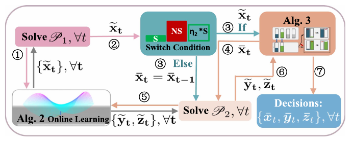
图 4. 所提方法的流程：OAA 统筹切换和在线控制，OLA 生成分数解，RRA 将分数决策随机化，OPA 计算支付。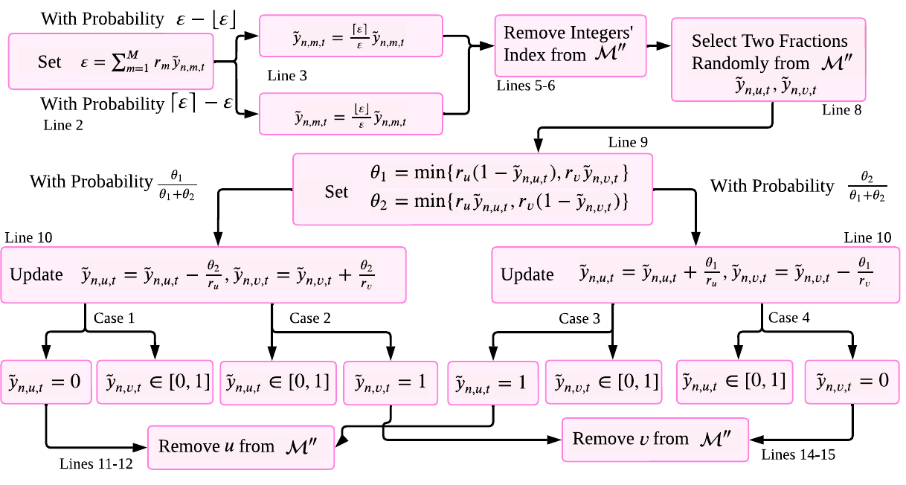
图 5. 随机舍入流程：模型部署通过保持加权资源总量的成对调整取整，查询数与中标变量则按分数部分概率在相邻整数间随机取整。III. 在线机制设计
Algorithm 1 is our main online control algorithm, which invokes Algorithms 2 and 3 for bid selection, model deployment, and query dispatch and invokes Algorithm 4 for payment allocation. This is shown in Fig. 4. These four algorithms are elaborated in Sections III-A–III-D, respectively.
算法 1 是本文的主要在线控制算法：它调用算法 2 和算法 3 完成中标选择、模型部署与查询分发，并调用算法 4 计算支付金额。整体流程见图 4；下文依次介绍四个算法。
Our proposed algorithms compose a combination that utilizes and unifies different ideas in a common framework of handling NP-hardness in polynomial time in repetitive online auctions with switching cost and long-term constraints, while being able to provide provable overall performance guarantees.
作者将多种方法组合到统一框架中，以多项式时间处理带切换成本和长期约束的重复在线拍卖，并给出总体性能保证。
记号说明：$\{\bar{x},\bar{y},\bar{z}\}$ 表示算法 1 调用算法 3 后得到的整数解，$\{\bar{x}_t,\bar{y}_t,\bar{z}_t\}$ 是时隙 $t$ 的决策；$\{\tilde{x}_t,\tilde{y}_t,\tilde{z}_t\}$ 表示算法 1 调用算法 2 时产生的分数解。
A. 受控切换
We decouple Problem P into two sub-problems, i.e., Problem P1 and Problem P2, based on the switching cost.
作者根据是否包含切换成本，将问题 $P$ 拆成子问题 $P_1$ 和 $P_2$。定义
Having these, Problem P1 and Problem P2 are as follows. Note that, compared to P1, the decision variables are only y and z in P2; and x-bar, produced by our algorithms, is given as input in P2.
于是，$P_1$ 在每个时隙选择分数中标变量 $x$、模型部署变量 $y$ 和查询数 $z$，最小化全时域非切换成本 $\sum_t\Theta_{-S}^t$；它满足每时隙资源约束 $h_t^1(x_t,y_t)\le0$ 以及三个长期约束 $\sum_tg_t^j(y_t,z_t)\le0$（$j=1,2,3$），并要求 $x,y\in[0,1]$、$z\in\mathbb{R}_+$。$P_2$ 将算法确定的整数中标决策 $\bar{x}_t$ 作为输入，只优化 $y,z$，其余目标和长期约束相同，瞬时可行条件相应写为 $h_t^2(\bar{x}_t,y_t)\le0$。这里 $h_t$ 和 $g_t^1$ 分别是按设备聚合的约束函数。
Algorithm 1 uses the pre-specified parameter eta > 0 to balance the switching cost and the non-switching cost. If cumulative non-switching cost since the last switch exceeds 1/eta times that switch's cost, it uses newly computed decisions.
算法 1（OAA）用预先设定的参数 $\eta>0$ 平衡切换成本与非切换成本。它先由 OLA 求出当前时隙的分数解；只有当自上次切换以来累计的非切换成本足够大，即达到上次切换成本的 $1/\eta$ 倍时，才用当前新的中标决策并将其随机舍入为整数。若实际中标集合发生变化，就记录新的切换时隙；否则沿用最近一次已确定的中标集合。随后在给定中标集合的条件下再解 $P_2$，舍入模型部署与查询分配，执行决策并计算支付。
算法 1：在线拍卖算法（OAA）
- 初始化 $t'=0$，$\bar{x}_{-1}=0$，$\bar{x}_0=\bar{y}_0=\bar{z}_0=0$。
- 对 $t=1,2,\ldots,T$：
- 调用 OLA 求 $P_1$ 的 $\tilde{x}_t,\tilde{y}_t,\tilde{z}_t$。
- 若 $\Theta_S^{t'}(\bar{x}_{t'},\bar{x}_{t'-1})\le\eta\sum_{u=t'}^t\Theta_{-S}^u(\bar{x}_u,\bar{y}_u,\bar{z}_u)$，则将 $\tilde{x}_t$ 经 RRA 舍入为 $\bar{x}_t$；若 $\bar{x}_t\ne\bar{x}_{t-1}$，令 $t'=t$。
- 令 $\bar{x}_t=\bar{x}_{t'}$；给定该中标决策，调用 OLA 求 $P_2$ 的 $\tilde{y}_t,\tilde{z}_t$，再用 RRA 舍入为 $\bar{y}_t,\bar{z}_t$。
- 在时隙 $t$ 执行 $\bar{x}_t,\bar{y}_t,\bar{z}_t$，并调用 OPA 计算支付。
The way eta is used forces that between adjacent switch operations the previous switching cost is no greater than eta times the non-switching cost accumulated; intuitively, this guarantees the total cost is no greater than 1+eta times the non-switching cost. This “wait and delay” idea is passive or reactive, rather than proactive, and enables the algorithm to overcome the dependency between bid selections in adjacent auctions.
直观解释：阈值规则把切换操作“延后到值得切换时再做”。相邻两次切换之间，前一次切换成本受该区间累计非切换成本控制，因此总切换成本可由非切换成本的常数倍界定。这样就把原本相邻时隙中标选择之间的耦合，转化为可控的等待策略。参数 $\eta$ 越小，通常意味着算法更谨慎地切换，但可能更久沿用旧中标集合。
B. 在线学习算法
Both P1 and P2 have a per-time-slot objective, instantaneous constraints, and long-term constraints. The long-term constraints can be moved into a Lagrangian with multipliers, then primal and dual variables are updated online.
$P_1$ 和 $P_2$ 都可写成如下形式：逐时隙最小化 $\sum_t f_t(X_t)$，满足每时隙约束 $h_t(X_t)\le0$，以及长期约束 $\sum_tg_t(X_t)\le0$。把长期约束引入拉格朗日函数后，可通过在线方式交替更新原变量 $X_t$ 和对偶乘子 $\omega_t$。
Algorithm 2: Set omega_t=[omega_{t-1}+mu g_{t-1}(X_{t-1})]^+. Then solve argmin over X in X: grad f_{t-1}(X_{t-1})(X-X_{t-1}) + omega_t g_{t-1}(X) + ||X-X_{t-1}||^2/(2 alpha), subject to h_{t-1}(X)<=0. Observe f_t,g_t,h_t for use at t+1.
算法 2：在线学习算法（OLA）
每个时隙先更新长期约束的对偶变量：
然后求解一个凸优化问题：
求解时，$P_1$ 的变量为 $X_t=\{\tilde{x}_t,\tilde{y}_t,\tilde{z}_t\}$；$P_2$ 的变量为 $X_t=\{\tilde{y}_t,\tilde{z}_t\}$。完成当前决策后，观察 $f_t,g_t,h_t$，供下一时隙使用。
The regularization term makes this a modified gradient-descent step. The per-time-slot problem is a standard convex optimization problem and can be solved with a standard convex solver. The long-term constraint is absorbed into the objective, leaving only instantaneous constraints; no input beyond the current time slot is used.
正则项 $\|X-X_{t-1}\|^2/(2\alpha)$ 使更新成为一种带稳定项的梯度步骤；每时隙子问题是标准凸优化问题，可调用 CVXPY 或 Gurobi 等求解器。长期约束进入对偶目标后，每个时隙只需处理瞬时约束。决策使用前一时隙已观察到的信息，不需要未来数据，也不需要提前知道事后才能观测到的推理误差。
读法提示：这里的“在线学习”不是训练一个神经网络，而是在线更新优化决策与约束乘子。$\mu$ 控制对长期约束违背的惩罚更新幅度，$\alpha$ 控制每步决策相对上一步的变化幅度。
C. 随机舍入
Algorithm 3 rounds fractional decisions into integers. For z and x, fractional parts are used as probabilities so that their expectations equal the fractional solutions. For y, a double randomization preserves the instantaneous computing-capacity constraint, the expectation, and eventually the long-term violation bounds.
原问题的控制变量必须为整数，OLA 给出的却是分数解，因此算法 3（RRA）负责随机舍入。对查询数 $z$ 和中标决策 $x$，分别在相邻整数之间随机取整，使 $\mathbb{E}[\bar{z}_t]=\tilde{z}_t$、$\mathbb{E}[\bar{x}_t]=\tilde{x}_t$。这让长期约束的期望分析成立，也为后面的激励性质提供所需条件。
对模型部署 $y$，算法采用两阶段随机化。先对设备 $n$ 上分数模型需求总量 $\epsilon=\sum_m r_m\tilde{y}_{n,m,t}$ 作随机向上或向下调整，使加权总量落在相邻整数之一；再反复选取两个尚未取整的模型 $u,v$，在保持 $r_u y_u+r_v y_v$ 不变的前提下随机沿两个方向移动，直到至少一个变量变成 0 或 1。这样每一步都保留设备的计算容量约束，同时保持每个模型部署变量的期望值。
The dependent rounding for y does not violate the instantaneous capacity constraint and preserves E[y-bar]=y-tilde. The simple randomized rounding for z and x also preserves expectations. Randomization permits bounded long-term constraint violations but no instantaneous violations.
如果设备未中标，部署变量直接置零；设备中标时，成对舍入保持加权算力占用不变，所以瞬时容量约束不会因舍入而被破坏。对 $z$ 和 $x$，分数部分就是向上取整的概率，因而期望等于原分数值。长期约束允许出现随机违背，但其期望违背量由后续定理控制。
算法 3：随机舍入算法（RRA）概述
- 对每台设备的 $\tilde{y}$：如加权需求总量不是整数，先按其小数部分概率选择相邻整数；然后反复对两个分数变量作保持加权总量不变的成对随机调整，直到各变量变为整数。
- 对 $\tilde{z}_{n,m,t}$：若已是整数则不变；否则按小数部分概率取 $\lceil\tilde{z}\rceil$，其余概率取 $\lfloor\tilde{z}\rfloor$。
- 对 $\tilde{x}_{n,t}$：同样按小数部分概率在 0 和 1 之间随机取值；本身为整数时保持不变。
算法直觉：普通的逐变量舍入可能让模型总资源需求超过设备容量。RRA 把每次随机调整设计成“此模型增加多少加权资源，彼模型就减少多少”，因此既消除分数变量，又维持算力总量。算法允许查询队列等长期约束在单次随机运行中偏离，但以无偏期望和理论界控制总体偏离。
D. 支付分配
For a winning bid n, w_{n,t}=b_{n,t} tilde{x}_{n,t}(b_{n,t},b_{-n,t})+ integral from b_{n,t} to bar omega_t of tilde{x}_{n,t}(b,b_{-n,t}) db. A losing bid receives zero.
对中标设备，OPA 按下式支付：
未中标设备的支付为 $w_{n,t}=0$。其中，$b_{n,t}$ 是该设备当前报价，$b_{-n,t}$ 是其他设备的报价，$\tilde{x}_{n,t}$ 是算法产生的分数中标分配，$\bar{\omega}_t$ 是服务方可接受的单位支付上界。
The payment rule follows necessary and sufficient conditions for truthfulness and individual rationality in randomized auctions. It is possible because the expected allocation equals the fractional allocation.
支付为何使用分数分配：随机拍卖的真实性条件约束的是“期望中标概率”随报价的变化。前述算法保证 $\mathbb{E}[\bar{x}_{n,t}]=\tilde{x}_{n,t}$，因此可直接用分数分配曲线构造积分支付。作者据此证明，逐时隙拍卖在期望意义下真实、个体理性；这不是说每一次随机实现都必然给出相同支付或非负效用。
图示说明
Fig. 4. Workflow of the proposed approach.
图 4. 所提方法的流程：OAA 统筹切换和在线控制，OLA 生成分数解，RRA 将分数决策随机化，OPA 计算支付。
Fig. 5. Flowchart for randomized rounding.
图 5. 随机舍入流程：模型部署通过保持加权资源总量的成对调整取整，查询数与中标变量则按分数部分概率在相邻整数间随机取整。
IV. 性能分析
IV. 性能分析
本节分析三类性质：子问题 $P_2$ 的后悔值（regret）与约束拟合度（fit），整体问题 $P$ 的竞争比，以及拍卖的真实性和个体理性。后悔值比较在线算法与逐时隙离线最优解序列；竞争比则比较在线算法与全时域离线最优解，二者基准不同。
A. 后悔值与拟合度
定义 1（后悔值）。令每时隙问题为 $\min_{X_t\in\mathcal{X}} f_t(X_t)$，满足 $h_t(X_t)\le0$ 和长期约束 $\sum_tg_t(X_t)\le0$。令 $X_t^*$ 为只看时隙 $t$ 的单时隙切片问题最优解，$\bar X_t$ 为在线算法解，则
定义 2（拟合度）。长期约束的拟合度定义为
瞬时约束始终满足，因此这里只度量长期约束的违背。拟合度和后悔值若为次线性增长，则除以时长 $T$ 后会趋于零。
定理 1。给定 $\{\bar{x}_t\}$，本文算法在 $P_2$ 上满足
其中 $\varsigma_1,\varsigma_2\in(0,1)$。期望来自随机舍入。
证明思路（论文 IV-D）：先对连续域中的 OLA 使用在线原始—对偶分析，要求约束函数有界、决策域半径有界，并控制逐时隙最优解的变化量，得到 $O(T^{\varsigma_1})$ 的后悔界和 $O(T^{\varsigma_2})$ 的长期约束界。再利用 RRA 的无偏性 $\mathbb{E}[\bar y_t]=\tilde y_t$、$\mathbb{E}[\bar z_t]=\tilde z_t$，将连续域结论转到整数随机解的期望上。论文取步长 $\mu=\alpha=O(T^{-1/\alpha_1})$（$\alpha_1>2$），由此得到次线性界。
证明中的关键界（式 5–9）
论文先在连续变量域中分析 OLA。设 $f_t$ 为时隙成本，$X_t^*$ 为逐时隙最优连续解，$\tilde X_t$ 为 OLA 解；假设约束向量范数有界于 $G$，凸决策域直径有界于 $R$。
其中 $\bar V_I$ 是逐时隙最优解的累计变化量；$\beta_1$–$\beta_5$ 是常数。再由对偶变量更新推出长期约束界：
其中 $\beta_6$–$\beta_8$ 为常数，且 $\varsigma_2\in(0,1)$。结合随机舍入保持期望，论文得到整数解的期望后悔值和期望约束拟合度：
B. 竞争比
定义 3（竞争比）。对最小化问题，若在线算法解 $\bar X$ 满足 $P(\bar X)\le\varsigma P(X^*)$，则称 $\varsigma$ 为竞争比，其中 $X^*$ 是整个时域问题的离线最优解。它不同于定义 1 中逐时隙最优解组成的序列。
定理 2（论文陈述）。论文先证明，OAA 的总切换成本至多为累计非切换成本的常数倍；再把非切换成本与整体离线最优成本联系起来，得到一个常数竞争界。对整数随机解，式（14）写为
论文说明，给定 $T$ 时，$O(T^{\varsigma_1})$ 是常数。
阅读时的边界说明：式（14）显式包含加性项 $O(T^{\varsigma_1})$。固定某个时域长度 $T$ 时，该项确实是常数；但若将“常数竞争比”理解为对所有 $T$ 都成立、且只有乘法项 $\varsigma P^*$ 的统一界，那么仅凭“给定 $T$ 时是常数”并不能消去该加性项。此处保留论文原结论，同时提醒读者区分“固定时域下的常数项”与“对时域长度一致的纯乘法竞争界”。
证明脉络（论文 IV-E）：OAA 的等待阈值给出相邻两次切换之间“切换成本/累计非切换成本”的界；此外，假设切换成本有上界、报价成本存在正下界，得到切换成本总和不超过非切换成本的常数倍。再以参数 $\xi$ 将算法的非切换成本同离线最优成本联系，得到式（13）。最后利用随机舍入的期望保持性与定理 1 的后悔界，得到式（14）。
将式（10）的每次切换等待区间成本相加，并利用式（11）控制区间末端切换，可得累计切换成本受非切换成本的常数倍约束：
再定义常数 $\xi$，将算法非切换成本与整体离线最优解比较，便有
C. 真实性与个体理性
定义 4（效用）。竞标设备 $n$ 的真实成本记为 $b'_{n,t}$，报价为 $b_{n,t}$。在随机拍卖中，其中标概率和支付都可能随机；期望效用是期望支付减去中标概率乘以真实成本，落标时效用为零。
定义 5（期望真实性）。若设备如实报出自身真实成本时能最大化期望效用，则称该随机拍卖在期望意义下真实。
定义 6（期望个体理性）。若每个竞标方的期望效用非负，则称拍卖在期望意义下满足个体理性。
定理 3。算法使每个时隙的随机拍卖在期望意义下真实且个体理性。真实性证明利用期望中标概率随报价单调不增，以及支付积分有限；个体理性证明利用 OPA 的积分支付公式和非负中标概率。论文式（15）将中标设备效用下界为 $\int_{b_{n,t}}^{\bar\omega_t}\tilde{x}_{n,t}(b,b_{-n,t})\,db\ge0$。
范围提示：这里的经济性质针对单个时隙拍卖，并且是在随机性取期望后成立。论文的定义 5 中有一处下标写作 $b_{-i,t}$，与全文其他位置使用的 $b_{-n,t}$ 不一致，较可能是排版笔误；本译文按其语义统一为“其他竞标者报价”。
期望个体理性的证明具体把中标设备的效用改写成报价以上的分配概率积分：
IV. 性能分析
The paper analyzes (i) regret and fit, (ii) competitive ratio, and (iii) truthfulness and individual rationality. Regret and fit refer to P2; competitive ratio and economic properties refer to the holistic problem P.
本节分析三类性质：子问题 $P_2$ 的后悔值（regret）与约束拟合度（fit），整体问题 $P$ 的竞争比，以及拍卖的真实性和个体理性。后悔值比较在线算法与逐时隙离线最优解序列；竞争比则比较在线算法与全时域离线最优解，二者基准不同。
A. 后悔值与拟合度
Regret is the difference between online objective and the series of one-shot offline optima. Fit is the norm of positive long-term constraint violations.
定义 1（后悔值）。令每时隙问题为 $\min_{X_t\in\mathcal{X}} f_t(X_t)$，满足 $h_t(X_t)\le0$ 和长期约束 $\sum_tg_t(X_t)\le0$。令 $X_t^*$ 为只看时隙 $t$ 的单时隙切片问题最优解，$\bar X_t$ 为在线算法解，则
Fit = || sum_t [g_t(X-bar_t)]_+ ||, where [·]+ = max{·,0}.
定义 2（拟合度）。长期约束的拟合度定义为
瞬时约束始终满足，因此这里只度量长期约束的违背。拟合度和后悔值若为次线性增长，则除以时长 $T$ 后会趋于零。
Theorem 1: Given x-bar as input, expected regret is O(T^ς1) and expected fit is O(T^ς2), where ς1, ς2 in (0,1).
定理 1。给定 $\{\bar{x}_t\}$，本文算法在 $P_2$ 上满足
其中 $\varsigma_1,\varsigma_2\in(0,1)$。期望来自随机舍入。
证明思路（论文 IV-D）：先对连续域中的 OLA 使用在线原始—对偶分析，要求约束函数有界、决策域半径有界，并控制逐时隙最优解的变化量，得到 $O(T^{\varsigma_1})$ 的后悔界和 $O(T^{\varsigma_2})$ 的长期约束界。再利用 RRA 的无偏性 $\mathbb{E}[\bar y_t]=\tilde y_t$、$\mathbb{E}[\bar z_t]=\tilde z_t$，将连续域结论转到整数随机解的期望上。论文取步长 $\mu=\alpha=O(T^{-1/\alpha_1})$（$\alpha_1>2$），由此得到次线性界。
证明中的关键界（式 5–9）
论文先在连续变量域中分析 OLA。设 $f_t$ 为时隙成本，$X_t^*$ 为逐时隙最优连续解，$\tilde X_t$ 为 OLA 解；假设约束向量范数有界于 $G$，凸决策域直径有界于 $R$。
其中 $\bar V_I$ 是逐时隙最优解的累计变化量；$\beta_1$–$\beta_5$ 是常数。再由对偶变量更新推出长期约束界：
其中 $\beta_6$–$\beta_8$ 为常数，且 $\varsigma_2\in(0,1)$。结合随机舍入保持期望，论文得到整数解的期望后悔值和期望约束拟合度：
B. 竞争比
Competitive ratio compares the online solution to the offline optimum for the whole problem, not to per-slot optima.
定义 3（竞争比）。对最小化问题，若在线算法解 $\bar X$ 满足 $P(\bar X)\le\varsigma P(X^*)$，则称 $\varsigma$ 为竞争比，其中 $X^*$ 是整个时域问题的离线最优解。它不同于定义 1 中逐时隙最优解组成的序列。
Theorem 2: The switching cost is at most Xi times the offline one-shot non-switching cost; total cost is at most ς2 times P^*. After randomized rounding, E[P] <= ς2 P^* + O(T^ς1), which the paper denotes ς P^* for fixed T.
定理 2（论文陈述）。论文先证明，OAA 的总切换成本至多为累计非切换成本的常数倍；再把非切换成本与整体离线最优成本联系起来，得到一个常数竞争界。对整数随机解，式（14）写为
论文说明，给定 $T$ 时，$O(T^{\varsigma_1})$ 是常数。
阅读时的边界说明：式（14）显式包含加性项 $O(T^{\varsigma_1})$。固定某个时域长度 $T$ 时，该项确实是常数；但若将“常数竞争比”理解为对所有 $T$ 都成立、且只有乘法项 $\varsigma P^*$ 的统一界，那么仅凭“给定 $T$ 时是常数”并不能消去该加性项。此处保留论文原结论，同时提醒读者区分“固定时域下的常数项”与“对时域长度一致的纯乘法竞争界”。
证明脉络（论文 IV-E）：OAA 的等待阈值给出相邻两次切换之间“切换成本/累计非切换成本”的界；此外，假设切换成本有上界、报价成本存在正下界，得到切换成本总和不超过非切换成本的常数倍。再以参数 $\xi$ 将算法的非切换成本同离线最优成本联系，得到式（13）。最后利用随机舍入的期望保持性与定理 1 的后悔界，得到式（14）。
将式（10）的每次切换等待区间成本相加，并利用式（11）控制区间末端切换，可得累计切换成本受非切换成本的常数倍约束：
再定义常数 $\xi$，将算法非切换成本与整体离线最优解比较，便有
C. 真实性与个体理性
Utility is expected payment minus true cost when winning, and zero when losing. Truthfulness and individual rationality hold in expectation.
定义 4（效用）。竞标设备 $n$ 的真实成本记为 $b'_{n,t}$，报价为 $b_{n,t}$。在随机拍卖中，其中标概率和支付都可能随机；期望效用是期望支付减去中标概率乘以真实成本，落标时效用为零。
定义 5（期望真实性）。若设备如实报出自身真实成本时能最大化期望效用，则称该随机拍卖在期望意义下真实。
定义 6（期望个体理性）。若每个竞标方的期望效用非负，则称拍卖在期望意义下满足个体理性。
Theorem 3: Each time-slot auction is truthful and individually rational in expectation.
定理 3。算法使每个时隙的随机拍卖在期望意义下真实且个体理性。真实性证明利用期望中标概率随报价单调不增，以及支付积分有限；个体理性证明利用 OPA 的积分支付公式和非负中标概率。论文式（15）将中标设备效用下界为 $\int_{b_{n,t}}^{\bar\omega_t}\tilde{x}_{n,t}(b,b_{-n,t})\,db\ge0$。
范围提示：这里的经济性质针对单个时隙拍卖，并且是在随机性取期望后成立。论文的定义 5 中有一处下标写作 $b_{-i,t}$，与全文其他位置使用的 $b_{-n,t}$ 不一致，较可能是排版笔误；本译文按其语义统一为“其他竞标者报价”。
期望个体理性的证明具体把中标设备的效用改写成报价以上的分配概率积分：
V. 实验评估
V. 实验评估
A. 评估设置
作者使用实验室测试床测量结果和已有数据评估所提方法，并与多种基线及先进方法比较。参数汇总如下。
表 II 参数设置
| 参数 | 取值或来源 |
|---|---|
| 报价 $b_{n,t}$ | 4–18 美元，参考 Amazon EC2 [39]。 |
| 切换成本 $l_n$ | 10–100 秒，参考既有统计 [40], [41]。 |
| 计算容量 $c_n$ | 4–128 个处理器核心 [1]。 |
| 查询队列容量 $q_n$ | 204–8100，取决于边缘设备内存 [42], [57]。 |
| 客流/查询量 $\tau_t$ | 每时隙 5–30 名用户 [21], [43]–[45]；伦敦数据中每名乘客每时隙提交 50–1250 条查询 [46]。 |
| 单条查询通信成本 $d_{n,t}$ | 0.1–0.9 秒 [1], [42], [47], [48]。 |
| 推理误差率 $a_{n,m,t}$ | 0.1–0.3 [1], [46]。 |
| 模型算力需求 $r_m$ | 1–20 个核心 [49]。 |
| 处理速度 $p_{n,m}$ | 每时隙 105–2447 条请求，来自测试床测量及 [50]。 |
| 模型传输时间 $e_{n,m,t}$ | 50–850 秒 [1]。 |
| 模型传输指示 $\delta_{n,m,t}$ | 根据模型是否需发送的时间轨迹 [51] 设置。 |
| 设备规模 | 最多考虑 1200 个竞标设备。 |
测试床测量：实际硬件包括 GeForce RTX 2080Ti、RTX 3090、NVIDIA Tesla V100、华为 Atlas 200DK 和 NVIDIA Jetson NX。作者在这些设备上测量 YOLOv4、DeepLabv3、BERT、VGG16 和 Inceptionv3 等计算机视觉与自然语言处理模型的推理表现。
图 6(b) 给出的示例设备时延为：边缘客户端 Huawei Atlas 311 ms、Jetson 191 ms；边缘服务器 Tesla V100 24 ms、RTX 3090 25 ms、RTX 2080Ti 39 ms。
推理工作负载：默认数据集 London 来自伦敦地铁 268 个车站的动态客流量，采集于 2016 年 11 月连续四天、每 15 分钟一个时间点，共约 300 个时隙。每位乘客每时隙提交 50–1250 条查询。其他数据集包括：
- IRSMSetting [21]：沿用 IRSM 研究设置，每时隙产生 5–30 名用户。
- MTA [45]：纽约大都会运输署客流数据，涵盖地铁、史泰登岛铁路及罗斯福岛缆车系统。
- Telecom [44]：上海电信数据集，六个月内收集逾 720 万条记录，涉及 9481 台移动设备通过 3233 个基站接入互联网。此数据集中每台设备每时隙提交一条查询。
每个时隙的总查询量作为边缘 AI 服务工作负载；单条查询通信成本取 0.1–0.9 秒。作者将模型误差率设为 0.1–0.3、资源需求设为 1–20 个核心，并指出通常误差率较低的模型需要更多资源。模型传输时间设为 50–850 秒，系统中可用模型超过十余种。
算法参数与对照组：算法 2 的步长按论文设置为 $\lambda=\mu=300^{-1/3}$，算法 1 的 $\eta=1/2$ [60]。OAA 使用 Python 实现，在线学习部分调用 CVXPY。比较方法包括：
- OAA：本文提出的方法。
- Random：随机选择中标报价。
- All：所有报价均中标。
- Price：选择成本效益最高的报价。
- IRSM [21]：最大化边缘服务器和设备的总社会福利，以选择中标方。
- TARFO [20]：通过策略性资源分配最小化所有任务的完成时间。
B. 实验结果
社会成本：图 7(a)、(b) 分别展示不同算法的归一化实时社会成本和累计社会成本。OAA 整体平均降低约 50%；相较 All、Random、Price 等启发式方法平均降低约 65%；相较 IRSM、TARFO 等先进方法平均降低约 40%。实时成本波动来自每个时隙的通信成本、查询负载、模型误差率和报价变化。OAA 的累计成本增长更慢。作者认为，IRSM 和 TARFO 虽面向边缘计算任务，却没有充分考虑模型推理误差和设备切换成本，因此可能导致更高误差与更高社会成本。实测竞争比为 1.6–3.9，多数落在 1.6–3。
后悔值与拟合度：图 7(c)、(d) 显示，二者均呈次线性增长，与理论分析一致。实验还观察到二者存在权衡：步长从 $T^{-1/2.5}$ 调整到 $T^{-1/3}$ 时，拟合度下降 15%–25%，后悔值上升 10%–15%。
可扩展性：图 8 展示不同因素对归一化总社会成本的影响。查询工作负载增加 0.2–0.4 倍时，社会成本增加 16%–66%，且增幅逐渐放缓；候选模型数量增加时，成本下降，因为模型池扩大后可更灵活地权衡推理误差与资源消耗。模型数超过十余种（约为基准的 1.6–2 倍）时，相比模型少于三种（约为基准的 0.1 倍），成本可降低 80% 以上。切换成本提高会推高总成本；竞标设备数量增加也可能推高成本，因为潜在中标设备变多。
不同数据集与误差率：图 9(a) 显示，相较其他算法，OAA 在 London、IRSMSetting、MTA 和 Telecom 上的平均社会成本分别降低 63%、38%、27% 和 10%。图 9(b) 统计全时域所选模型处理查询的平均“误差率”；该指标本身就是目标函数的一部分。OAA 的误差率比其他方法低 8%–24%。
真实性与个体理性：图 10 选取两位竞标者展示支付、成本和效用。图 10(a) 中每时隙的支付高于成本，落标者没有支付；图 10(b)、(c) 中，效用在竞标者按真实成本报价时达到最大，符合论文所述的期望个体理性与期望真实性。
运行时间：图 11 在配备 16 个 2.5 GHz Intel Core i7 CPU、32 GB 内存的商用桌面服务器上测量算法耗时。OAA 及 OLA、RRA 等组件通常在几十毫秒内完成；OPA 平均约需 10 秒（未画入图 11）。作者认为支付计算没有严格实时要求，可在 15 分钟时隙结束前完成，例如与推理过程并行运行。整体耗时远低于单个时隙长度。
图 6–11 图注译文
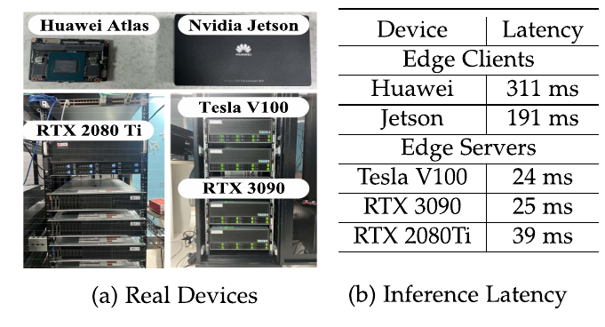
图 6. 测试床配置与测量结果：（a）实际设备；（b）推理时延。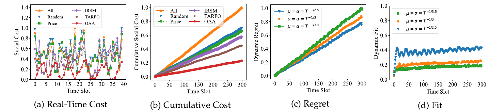
图 7. 不同方法的社会成本与在线学习性能。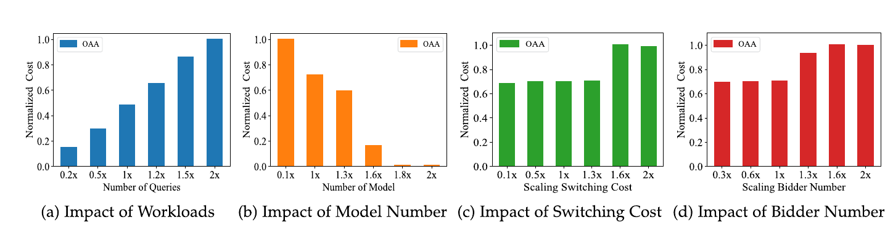
图 8. 不同因素对社会成本的影响。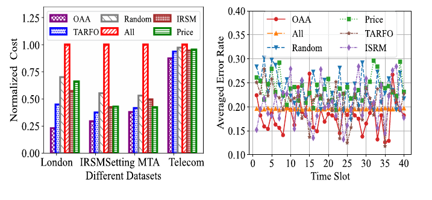
图 9.（a）不同数据集上的成本；（b）误差率。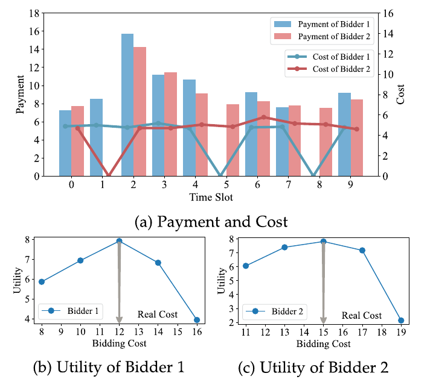
图 10. 个体理性与真实性。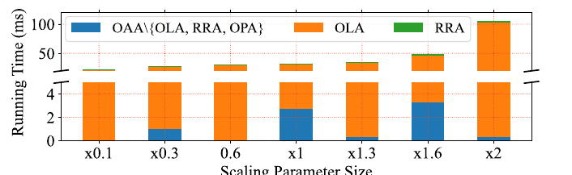
图 11. 运行时间。V. 实验评估
A. 评估设置
The authors evaluate the proposed approach with testbed measurements and existing data, comparing it with baseline and state-of-the-art approaches.
作者使用实验室测试床测量结果和已有数据评估所提方法，并与多种基线及先进方法比较。参数汇总如下。
表 II 参数设置
| Parameter | Value or source |
|---|---|
| Bid price | $4–$18, Amazon EC2 [39] |
| Switching cost | 10–100 s [40], [41] |
| Computing capacity | 4–128 processor cores [1] |
| Queue capacity | 204–8100 [42], [57] |
| Workload | 5–30 users per slot [21], [43]–[45]; London: 50–1250 queries per passenger per slot [46] |
| Query communication cost | 0.1–0.9 s [1], [42], [47], [48] |
| Inference error rate | 0.1–0.3 [1], [46] |
| Model resource requirement | 1–20 cores [49] |
| Processing speed | 105–2447 requests per slot [50] |
| Model transmission time | 50–850 s [1] |
| Model transmission indicator | Traces from [51] |
| Number of bidders | Up to 1200 |
| 参数 | 取值或来源 |
|---|---|
| 报价 $b_{n,t}$ | 4–18 美元，参考 Amazon EC2 [39]。 |
| 切换成本 $l_n$ | 10–100 秒，参考既有统计 [40], [41]。 |
| 计算容量 $c_n$ | 4–128 个处理器核心 [1]。 |
| 查询队列容量 $q_n$ | 204–8100，取决于边缘设备内存 [42], [57]。 |
| 客流/查询量 $\tau_t$ | 每时隙 5–30 名用户 [21], [43]–[45]；伦敦数据中每名乘客每时隙提交 50–1250 条查询 [46]。 |
| 单条查询通信成本 $d_{n,t}$ | 0.1–0.9 秒 [1], [42], [47], [48]。 |
| 推理误差率 $a_{n,m,t}$ | 0.1–0.3 [1], [46]。 |
| 模型算力需求 $r_m$ | 1–20 个核心 [49]。 |
| 处理速度 $p_{n,m}$ | 每时隙 105–2447 条请求，来自测试床测量及 [50]。 |
| 模型传输时间 $e_{n,m,t}$ | 50–850 秒 [1]。 |
| 模型传输指示 $\delta_{n,m,t}$ | 根据模型是否需发送的时间轨迹 [51] 设置。 |
| 设备规模 | 最多考虑 1200 个竞标设备。 |
The real-world testbed includes GeForce RTX 2080Ti, RTX 3090, Tesla V100, Huawei Atlas 200DK, and Nvidia Jetson NX. Models are YOLOv4, DeepLabv3, BERT, VGG16, and Inceptionv3.
测试床测量：实际硬件包括 GeForce RTX 2080Ti、RTX 3090、NVIDIA Tesla V100、华为 Atlas 200DK 和 NVIDIA Jetson NX。作者在这些设备上测量 YOLOv4、DeepLabv3、BERT、VGG16 和 Inceptionv3 等计算机视觉与自然语言处理模型的推理表现。
图 6(b) 给出的示例设备时延为：边缘客户端 Huawei Atlas 311 ms、Jetson 191 ms；边缘服务器 Tesla V100 24 ms、RTX 3090 25 ms、RTX 2080Ti 39 ms。
The default London workload uses passenger counts from 268 underground stations at 15-minute intervals over four days in November 2016, giving about 300 slots. Other workloads are IRSMSetting, MTA, and Shanghai Telecom.
推理工作负载：默认数据集 London 来自伦敦地铁 268 个车站的动态客流量，采集于 2016 年 11 月连续四天、每 15 分钟一个时间点，共约 300 个时隙。每位乘客每时隙提交 50–1250 条查询。其他数据集包括：
- IRSMSetting [21]：沿用 IRSM 研究设置，每时隙产生 5–30 名用户。
- MTA [45]：纽约大都会运输署客流数据，涵盖地铁、史泰登岛铁路及罗斯福岛缆车系统。
- Telecom [44]：上海电信数据集，六个月内收集逾 720 万条记录，涉及 9481 台移动设备通过 3233 个基站接入互联网。此数据集中每台设备每时隙提交一条查询。
每个时隙的总查询量作为边缘 AI 服务工作负载；单条查询通信成本取 0.1–0.9 秒。作者将模型误差率设为 0.1–0.3、资源需求设为 1–20 个核心，并指出通常误差率较低的模型需要更多资源。模型传输时间设为 50–850 秒，系统中可用模型超过十余种。
算法参数与对照组：算法 2 的步长按论文设置为 $\lambda=\mu=300^{-1/3}$，算法 1 的 $\eta=1/2$ [60]。OAA 使用 Python 实现，在线学习部分调用 CVXPY。比较方法包括：
- OAA：本文提出的方法。
- Random：随机选择中标报价。
- All：所有报价均中标。
- Price：选择成本效益最高的报价。
- IRSM [21]：最大化边缘服务器和设备的总社会福利，以选择中标方。
- TARFO [20]：通过策略性资源分配最小化所有任务的完成时间。
B. 实验结果
OAA reduces average social cost by about 50% overall, 65% compared with heuristics, and 40% compared with IRSM and TARFO. Its practical competitive ratio is 1.6–3.9, mostly 1.6–3.
社会成本：图 7(a)、(b) 分别展示不同算法的归一化实时社会成本和累计社会成本。OAA 整体平均降低约 50%；相较 All、Random、Price 等启发式方法平均降低约 65%；相较 IRSM、TARFO 等先进方法平均降低约 40%。实时成本波动来自每个时隙的通信成本、查询负载、模型误差率和报价变化。OAA 的累计成本增长更慢。作者认为，IRSM 和 TARFO 虽面向边缘计算任务，却没有充分考虑模型推理误差和设备切换成本，因此可能导致更高误差与更高社会成本。实测竞争比为 1.6–3.9，多数落在 1.6–3。
Regret and fit are sub-linear. As the step size changes from T^-1/2.5 to T^-1/3, fit decreases 15%–25% and regret grows 10%–15%.
后悔值与拟合度：图 7(c)、(d) 显示，二者均呈次线性增长，与理论分析一致。实验还观察到二者存在权衡：步长从 $T^{-1/2.5}$ 调整到 $T^{-1/3}$ 时，拟合度下降 15%–25%，后悔值上升 10%–15%。
可扩展性：图 8 展示不同因素对归一化总社会成本的影响。查询工作负载增加 0.2–0.4 倍时，社会成本增加 16%–66%，且增幅逐渐放缓；候选模型数量增加时，成本下降，因为模型池扩大后可更灵活地权衡推理误差与资源消耗。模型数超过十余种（约为基准的 1.6–2 倍）时，相比模型少于三种（约为基准的 0.1 倍），成本可降低 80% 以上。切换成本提高会推高总成本；竞标设备数量增加也可能推高成本，因为潜在中标设备变多。
Across London, IRSMSetting, MTA, and Telecom, OAA reduces cost by 63%, 38%, 27%, and 10%. Its selected models' average error is 8%–24% lower than competitors.
不同数据集与误差率：图 9(a) 显示，相较其他算法，OAA 在 London、IRSMSetting、MTA 和 Telecom 上的平均社会成本分别降低 63%、38%、27% 和 10%。图 9(b) 统计全时域所选模型处理查询的平均“误差率”；该指标本身就是目标函数的一部分。OAA 的误差率比其他方法低 8%–24%。
真实性与个体理性：图 10 选取两位竞标者展示支付、成本和效用。图 10(a) 中每时隙的支付高于成本，落标者没有支付；图 10(b)、(c) 中，效用在竞标者按真实成本报价时达到最大，符合论文所述的期望个体理性与期望真实性。
OAA and its OLA/RRA components run in tens of milliseconds. OPA averages around 10 seconds and can execute before the 15-minute slot ends.
运行时间：图 11 在配备 16 个 2.5 GHz Intel Core i7 CPU、32 GB 内存的商用桌面服务器上测量算法耗时。OAA 及 OLA、RRA 等组件通常在几十毫秒内完成；OPA 平均约需 10 秒（未画入图 11）。作者认为支付计算没有严格实时要求，可在 15 分钟时隙结束前完成，例如与推理过程并行运行。整体耗时远低于单个时隙长度。
图 6–11 图注译文
Fig. 6. Testbed setup and measurement.
图 6. 测试床配置与测量结果：（a）实际设备；（b）推理时延。
Fig. 7. Social cost of different approaches and performance of online learning.
图 7. 不同方法的社会成本与在线学习性能。
Fig. 8. Social cost impacted by different factors.
图 8. 不同因素对社会成本的影响。
Fig. 9. (a) Cost on different datasets; (b) Error rates.
图 9.（a）不同数据集上的成本；（b）误差率。
Fig. 10. Individual rationality and truthfulness.
图 10. 个体理性与真实性。
Fig. 11. Running time.
图 11. 运行时间。
VI. 相关工作
VI. 相关工作
论文将代表性既有研究分为边缘 AI 推理优化和边缘激励机制两组。
A. 边缘 AI 推理优化
Liu 等人 [17] 为移动边缘计算提出自适应深度神经网络（DNN）推理框架，在线选择退出点和切分点。Sun 等人 [13] 研究在线自适应选择，以处理批次对推理结果的长期影响。Huang 等人 [18] 使用多出口 DNN 与分布式卸载机制降低边缘计算时延。Jin 等人 [1] 通过在线学习应对边缘环境的动态波动。Miao 等人 [19] 提出基于有向无环图（DAG）结构切分 DNN 的负载均衡算法，以加速推理。Wen 等人 [61] 将感知、计算和通信一体化（ISCC）建模为优化问题，在时延、能耗和传输约束下优化推理准确率。
B. 边缘激励机制
Wang 等人 [20] 提出兼顾真实性、灵活任务卸载和位置约束的资源分配算法。Li 等人 [21] 研究能源预算约束下边缘动态任务的在线激励机制，以改善社会福利。Zhou 等人 [22] 提出面向边缘—云网络中分布式机器学习任务的在线拍卖框架，联合处理定价、部署与调度。Yuan 等人 [11] 在考虑数据量和用户动态变化的情况下，为边缘联邦学习设计激励机制并给出性能保证。Wang 等人 [23] 设计激励机制，在资源提供者收益与移动设备的服务体验质量之间权衡。Chen 等人 [12] 通过两阶段拍卖激励用户设备为计算卸载提供中继服务，并考虑节点真实性与用户理性。
C. 研究空缺
表 III 从问题场景、解的性质、评估方式和年份等维度比较既有研究。作者指出，第一组研究通常假设资源充足、可随时使用，或未充分考虑资源占用成本；它们没有处理资源不足以满足动态需求、因而必须动态招募和释放资源的场景。大规模按固定单价购买边缘资源还可能造成较高运营成本。第二组研究通常没有针对边缘 AI 推理及其特有挑战；若直接套用，可能损害推理准确率和服务质量。本文试图填补这些空缺。
表 III 的比较维度
| 文献 | 边缘激励 | 推理任务 | 在线场景 | 长期约束 | 近似/竞争比 | 经济性质 | 测试床原型 | 年份 |
|---|---|---|---|---|---|---|---|---|
| [17] | — | ✓ | ✓ | — | ✓ | — | ✓ | 2024 |
| [13] | — | ✓ | ✓ | ✓ | — | — | ✓ | 2023 |
| [18] | — | ✓ | ✓ | ✓ | — | — | ✓ | 2021 |
| [1] | — | ✓ | ✓ | ✓ | ✓ | — | — | 2020 |
| [19] | — | ✓ | — | — | ✓ | — | ✓ | 2020 |
| [20] | ✓ | — | — | — | ✓ | ✓ | ✓ | 2024 |
| [21] | ✓ | — | ✓ | ✓ | ✓ | ✓ | — | 2023 |
| [22] | ✓ | — | ✓ | — | ✓ | ✓ | ✓ | 2023 |
| [11] | ✓ | — | ✓ | ✓ | ✓ | ✓ | — | 2022 |
| [23] | ✓ | — | ✓ | — | ✓ | ✓ | — | 2022 |
| [12] | ✓ | — | ✓ | — | — | ✓ | — | 2021 |
| 本文 | ✓ | ✓ | ✓ | ✓ | ✓ | ✓ | ✓ | 2024* |
注：✓ 表示表中标记该项；年份按原文表 III。原文在线发表版本为 2025 年刊期，而比较表将本文标为 2024 年。
VII. 讨论
竞标者连接不稳定
系统按时隙运行，每个时隙恰有一轮拍卖。模型假设参与某轮拍卖的设备在该轮结束前保持连接并履行承诺，这与许多云和边缘拍卖研究的假设一致。若设备提交报价后、结果公布前离开，服务方可因其可信度和可靠性问题，在后续拍卖中将其排除。
频繁退出与重复报价
本文允许设备在不同拍卖间自由参加、退出和重复报价，不因此惩罚竞标者，因为设备所有者应能自愿决定是否参加某轮拍卖。如果设备若干轮未参加或未中标，后来再次中标可能产生切换成本；该成本已纳入社会成本模型。
深度强化学习的适用性
作者认为深度强化学习（DRL）虽然可能相关，但本文不采用它：一是该问题已有明确数学模型；二是 DRL 往往缺少严格可证明的性能保证，难以预测最坏情况；三是训练数据、训练时间及冷启动或收敛开销可能较大。相比之下，本文在线算法无需训练，可直接逐时隙作出决策。
VIII. 结论
本文通过重复拍卖，使边缘 AI 服务能够动态、持续地从更广泛的边缘设备中招募资源，并以较低成本向终端用户提供推理服务。作者建立重复拍卖模型，提出一组在线算法，联合控制中标选择、模型部署、查询分发和支付分配，以应对多个非平凡挑战；同时从多项性能指标开展理论分析，并通过实验与基线及先进方法比较。未来工作将研究结合资源交易的边缘 AI 训练。
致谢
作者感谢 Zhixin Zhang、Runze Ma、Tina 和 Radin 的贡献。
参考文献与作者简介说明
论文参考文献 [1]–[61] 保留原文格式与编号，详见随附原文 PDF 第 17–18 页。以下作者简介按论文第 18 页译为中文。
作者简介
- Mingtao Ji：2018 年获南京航空航天大学计算机科学与技术学院工学学士学位，目前在南京大学攻读博士学位，导师为 Zhuzhong Qian 教授。已发表 17 篇以上论文，发表于 IEEE Transactions on Mobile Computing、IEEE/ACM Transactions on Networking、COMNET、Journal of Computer Science and Technology 等期刊，以及 IEEE INFOCOM、SECON、ICPADS、ISPA、ICC、IWQoS 海报和 BigCom 等会议；获 2023 年 BigCom 最佳论文奖。研究兴趣包括边缘推理、计算能力网络（CPN）、P4 交换机、软件定义网络、联邦学习、大数据分析和分布式机器学习。
- Hehan Zhao：2023 年获多伦多大学文理学院学士学位，目前在多伦多大学 Edward S. Rogers Sr. 电气与计算机工程系攻读工程硕士，研究重点为计算机工程、数据分析与机器学习。研究兴趣包括边缘计算、大语言模型、自然语言处理和计算机视觉。
- Lei Jiao：获德国哥廷根大学计算机科学博士学位，现为俄勒冈大学教员；此前曾任职于爱尔兰 Nokia Bell Labs。研究兴趣为将优化、控制、学习和机制设计应用于计算机与通信系统、网络及服务。已发表 80 余篇论文，曾获美国国家科学基金会 CAREER 奖、IEEE LANMAN 2013 和 IEEE CNS 2019 最佳论文奖，以及 2016 年阿尔卡特朗讯贝尔实验室英国与爱尔兰认可奖；曾担任 INFOCOM、MOBIHOC 和 ICDCS 程序委员会委员。
- Sheng Zhang（IEEE 会员）：2008 年和 2014 年分别获南京大学学士和博士学位，现任南京大学计算机科学与技术系副教授，并为软件新技术国家重点实验室成员。研究兴趣包括云计算与边缘计算。已发表 80 余篇论文，发表于 IEEE Transactions on Mobile Computing、IEEE/ACM Transactions on Networking、IEEE Transactions on Parallel and Distributed Systems、IEEE Transactions on Computers，以及 MobiHoc、ICDCS、INFOCOM、SECON、IWQoS 和 ICPP 等会议。获 IEEE ICCCN 2020 最佳论文奖、IEEE MASS 2012 最佳论文亚军及 2015 年 ACM 中国博士学位论文提名奖；为中国计算机学会高级会员。
- Xin Li：2008 年和 2014 年分别获南京大学学士和博士学位，现任南京航空航天大学计算机科学与技术学院副教授。研究兴趣包括云计算、边缘计算和分布式计算。
- Zhuzhong Qian：2007 年获计算机科学博士学位，现任南京大学计算机科学与技术系教授。研究兴趣包括边缘智能、数据中心网络和分布式机器学习。已在 IEEE Journal on Selected Areas in Communications、IEEE/ACM Transactions on Networking、IEEE Transactions on Parallel and Distributed Systems，以及 INFOCOM、ICDCS、IPDPS 和 SECON 等发表 80 余篇论文；曾获 WoWMoM 2021 最佳论文候选和 ICPADS 2021 最佳论文亚军。
- Baoliu Ye：2004 年获南京大学计算机科学博士学位，现任南京大学计算机科学与技术系教授。2005 年 3 月至 2006 年 7 月曾在日本会津大学访问研究。研究兴趣主要包括分布式系统、云计算和边缘智能，在主要会议及期刊发表论文 100 余篇；任中国计算机学会理事，并任 CCF 分布式计算与系统专委会副主任。
VI. 相关工作
论文将代表性既有研究分为边缘 AI 推理优化和边缘激励机制两组。
A. 边缘 AI 推理优化
| Prior work | Edge incentive | Inference task | Online setting | Long-term constraints | Approximation / competitive ratio | Economic properties | Testbed prototype | Year |
|---|---|---|---|---|---|---|---|---|
| [17] | — | ✓ | ✓ | — | ✓ | — | ✓ | 2024 |
| [13] | — | ✓ | ✓ | ✓ | — | — | ✓ | 2023 |
| [18] | — | ✓ | ✓ | ✓ | — | — | ✓ | 2021 |
| [1] | — | ✓ | ✓ | ✓ | ✓ | — | — | 2020 |
| [19] | — | ✓ | — | — | ✓ | — | ✓ | 2020 |
| [20] | ✓ | — | — | — | ✓ | ✓ | ✓ | 2024 |
| [21] | ✓ | — | ✓ | ✓ | ✓ | ✓ | — | 2023 |
| [22] | ✓ | — | ✓ | — | ✓ | ✓ | ✓ | 2023 |
| [11] | ✓ | — | ✓ | ✓ | ✓ | ✓ | — | 2022 |
| [23] | ✓ | — | ✓ | — | ✓ | ✓ | — | 2022 |
| [12] | ✓ | — | ✓ | — | — | ✓ | — | 2021 |
| This work | ✓ | ✓ | ✓ | ✓ | ✓ | ✓ | ✓ | 2024* |
| 文献 | 边缘激励 | 推理任务 | 在线场景 | 长期约束 | 近似/竞争比 | 经济性质 | 测试床原型 | 年份 |
|---|---|---|---|---|---|---|---|---|
| [17] | — | ✓ | ✓ | — | ✓ | — | ✓ | 2024 |
| [13] | — | ✓ | ✓ | ✓ | — | — | ✓ | 2023 |
| [18] | — | ✓ | ✓ | ✓ | — | — | ✓ | 2021 |
| [1] | — | ✓ | ✓ | ✓ | ✓ | — | — | 2020 |
| [19] | — | ✓ | — | — | ✓ | — | ✓ | 2020 |
| [20] | ✓ | — | — | — | ✓ | ✓ | ✓ | 2024 |
| [21] | ✓ | — | ✓ | ✓ | ✓ | ✓ | — | 2023 |
| [22] | ✓ | — | ✓ | — | ✓ | ✓ | ✓ | 2023 |
| [11] | ✓ | — | ✓ | ✓ | ✓ | ✓ | — | 2022 |
| [23] | ✓ | — | ✓ | — | ✓ | ✓ | — | 2022 |
| [12] | ✓ | — | ✓ | — | — | ✓ | — | 2021 |
| 本文 | ✓ | ✓ | ✓ | ✓ | ✓ | ✓ | ✓ | 2024* |
注：✓ 表示表中标记该项；年份按原文表 III。原文在线发表版本为 2025 年刊期，而比较表将本文标为 2024 年。
VII. 讨论
竞标者连接不稳定
Each time slot has one auction. The model assumes a participating bidder stays connected and committed during that auction. A bidder that leaves before the outcome could be excluded from later auctions for credibility reasons.
系统按时隙运行，每个时隙恰有一轮拍卖。模型假设参与某轮拍卖的设备在该轮结束前保持连接并履行承诺，这与许多云和边缘拍卖研究的假设一致。若设备提交报价后、结果公布前离开，服务方可因其可信度和可靠性问题，在后续拍卖中将其排除。
频繁退出与重复报价
The model permits arbitrary participation and repeated bidding across auctions without penalties. Winning after a period of absence or losing may incur switching cost, which is already included in the social-cost model.
本文允许设备在不同拍卖间自由参加、退出和重复报价，不因此惩罚竞标者，因为设备所有者应能自愿决定是否参加某轮拍卖。如果设备若干轮未参加或未中标，后来再次中标可能产生切换成本；该成本已纳入社会成本模型。
深度强化学习的适用性
The authors do not use DRL because the problem has an explicit mathematical model, DRL may lack rigorous guarantees, and it often requires substantial training and cold-start overhead. Their online algorithms make decisions directly without training.
作者认为深度强化学习（DRL）虽然可能相关，但本文不采用它：一是该问题已有明确数学模型；二是 DRL 往往缺少严格可证明的性能保证，难以预测最坏情况；三是训练数据、训练时间及冷启动或收敛开销可能较大。相比之下，本文在线算法无需训练，可直接逐时隙作出决策。
VIII. 结论
This work enables edge AI inference services to recruit diverse edge resources dynamically through repeated auctions, jointly controlling winning bids, model deployment, query dispatch, and payment, with theoretical analysis and experiments. Future work will study edge AI training with resource trading.
本文通过重复拍卖，使边缘 AI 服务能够动态、持续地从更广泛的边缘设备中招募资源，并以较低成本向终端用户提供推理服务。作者建立重复拍卖模型，提出一组在线算法，联合控制中标选择、模型部署、查询分发和支付分配，以应对多个非平凡挑战；同时从多项性能指标开展理论分析，并通过实验与基线及先进方法比较。未来工作将研究结合资源交易的边缘 AI 训练。
致谢
作者感谢 Zhixin Zhang、Runze Ma、Tina 和 Radin 的贡献。
参考文献与作者简介说明
论文参考文献 [1]–[61] 保留原文格式与编号，详见随附原文 PDF 第 17–18 页。以下作者简介按论文第 18 页译为中文。
作者简介
- Mingtao Ji：2018 年获南京航空航天大学计算机科学与技术学院工学学士学位，目前在南京大学攻读博士学位，导师为 Zhuzhong Qian 教授。已发表 17 篇以上论文，发表于 IEEE Transactions on Mobile Computing、IEEE/ACM Transactions on Networking、COMNET、Journal of Computer Science and Technology 等期刊，以及 IEEE INFOCOM、SECON、ICPADS、ISPA、ICC、IWQoS 海报和 BigCom 等会议；获 2023 年 BigCom 最佳论文奖。研究兴趣包括边缘推理、计算能力网络（CPN）、P4 交换机、软件定义网络、联邦学习、大数据分析和分布式机器学习。
- Hehan Zhao：2023 年获多伦多大学文理学院学士学位，目前在多伦多大学 Edward S. Rogers Sr. 电气与计算机工程系攻读工程硕士，研究重点为计算机工程、数据分析与机器学习。研究兴趣包括边缘计算、大语言模型、自然语言处理和计算机视觉。
- Lei Jiao：获德国哥廷根大学计算机科学博士学位，现为俄勒冈大学教员；此前曾任职于爱尔兰 Nokia Bell Labs。研究兴趣为将优化、控制、学习和机制设计应用于计算机与通信系统、网络及服务。已发表 80 余篇论文，曾获美国国家科学基金会 CAREER 奖、IEEE LANMAN 2013 和 IEEE CNS 2019 最佳论文奖，以及 2016 年阿尔卡特朗讯贝尔实验室英国与爱尔兰认可奖；曾担任 INFOCOM、MOBIHOC 和 ICDCS 程序委员会委员。
- Sheng Zhang（IEEE 会员）：2008 年和 2014 年分别获南京大学学士和博士学位，现任南京大学计算机科学与技术系副教授，并为软件新技术国家重点实验室成员。研究兴趣包括云计算与边缘计算。已发表 80 余篇论文，发表于 IEEE Transactions on Mobile Computing、IEEE/ACM Transactions on Networking、IEEE Transactions on Parallel and Distributed Systems、IEEE Transactions on Computers，以及 MobiHoc、ICDCS、INFOCOM、SECON、IWQoS 和 ICPP 等会议。获 IEEE ICCCN 2020 最佳论文奖、IEEE MASS 2012 最佳论文亚军及 2015 年 ACM 中国博士学位论文提名奖；为中国计算机学会高级会员。
- Xin Li：2008 年和 2014 年分别获南京大学学士和博士学位，现任南京航空航天大学计算机科学与技术学院副教授。研究兴趣包括云计算、边缘计算和分布式计算。
- Zhuzhong Qian：2007 年获计算机科学博士学位，现任南京大学计算机科学与技术系教授。研究兴趣包括边缘智能、数据中心网络和分布式机器学习。已在 IEEE Journal on Selected Areas in Communications、IEEE/ACM Transactions on Networking、IEEE Transactions on Parallel and Distributed Systems，以及 INFOCOM、ICDCS、IPDPS 和 SECON 等发表 80 余篇论文；曾获 WoWMoM 2021 最佳论文候选和 ICPADS 2021 最佳论文亚军。
- Baoliu Ye：2004 年获南京大学计算机科学博士学位，现任南京大学计算机科学与技术系教授。2005 年 3 月至 2006 年 7 月曾在日本会津大学访问研究。研究兴趣主要包括分布式系统、云计算和边缘智能，在主要会议及期刊发表论文 100 余篇；任中国计算机学会理事，并任 CCF 分布式计算与系统专委会副主任。